四分律鈔簡正記卷第十一(從釋相第三十戒畢九十戒)
三十捨墮
大門第四篇分二。初總標指略依。今直明。次依戒釋。初云三十至相種者。三十捨墮者。總標也。對此略分為二。初標釋名癈立。二前後所以。初懺法如後者。指略也。大德云。此亦旁破古非。謂古師隨一一戒下便出懺法極繁。今即不然。自有一篇。如下所述。直明相種者。依今直明也。既不依古出懺法。但明具緣成犯闕緣不犯之相也。種謂種類。即三十因財而生。並是貪之種類故。言尼薩耆者西梵之語也。東土譯之為捨如多論云。有三種捨。一捨財。二捨相續心。三捨罪。波逸提如前篇番墮。故云三十捨墮。若論九十二拔理。亦合名捨。然不因財單悔本墮。故名捨也。二辨先後者。據其罪體義者。合同篇聚。良由財事取納乖方。損生壞道。欲洗心悔。必須上境。方乃絕滅。相續貪心之事既捨。障業須遣。故次明罪。作法是難。故須前列。九十捨懺在別但斷後犯。便成洗悔。作法是易。故次明之。欲使學者先識於難。後及於易。若約遮性而分。唯迴僧物。一戒是性。餘二十九俱是遮收也。
依戒釋中。三十不同。即三十段。今當第一。云初長衣過限戒者。釋名者。戒疏云。限分之餘名長。越於分齊名為過限。此是所防(云云)。
云多至故者。壞道功德財者。謂無貪等三。能生萬善功德。此之功德。能資養法身慧命。喻之財。今貪俗利。即萬善無由得生。豈非壞也。餘如文。
云具六緣者。總標犯緣也。
云一至說淨者。問何以此戒。只總標緣。不更別列。與諸戒為果。大德云。諸戒是隨難解釋。此中初一離明。後五合辨。亦是製作家變通自在。更無別理。一是己長衣者。鈔下自釋云。謂三衣之外財也。三衣非長衣之物。故簡異之。有作己字。謂是自己長衣即犯者錯呼也。
四分等者。辨長衣量也。鈔約周尺以論。此今唐尺。長一尺三寸四分弱。廣六寸六分強也。若長廣互過減。皆不結犯。要二俱過者。謂律文有九句。四句犯。五句不犯。言九句者。三三而作也。先將過為顯成三句。次將如為顯成三句。後將減為顯成三句。且初三句者。一長中過廣中過犯。二長中過廣中如犯。三長中過廣中減不犯。次三句者。一長中如廣中過犯。二長中如廣中如犯。三長中如廣中減不犯。後三句者。一長中減廣中過不犯。二長中減廣中如不犯。三長中減廣中減不犯。已上九句。今古不同。古人見律九句。四句犯五句不犯。便妄執云。要須俱如及俱過始犯。若互過即不犯。今師云不然。律云不犯者。且約不犯提非無吉。准此上來九句。四句提五句犯吉。下引多論。談上五句。律文不犯處雖無提二。准論有吉。下遂結云。故須俱說。古記云。律制俱如二犯。何故鈔文要俱過。若爾俱如無成不犯。若不犯者。豈非違律文耶。大德云不然。但舉俱過自攝。俱如鈔。慮繁故不能重言。非不委也。
以三衣無長可防者。謂有三衣。望餘衣即有淨法防長。今無三衣。即當體更無依長可防。淨法即失故。若捨即須說淨。以體體長故。有緣得褺指作三衣等者。此謂有失奪等緣。有人得端褺。未能製造得衣受持。恐過日犯長。且指三衣。即免長過。搜玄約令色如法之褺。今云不然。但明端褺。即依何論。染了未染等。三肘五肘外有長說淨者。大德云。餘有長者。截下說淨。玄云。連指衣體外說淨。二解並正。
云問至耳者。引此月望衣。難前得褺指作三衣。則免長過。何以月望割簪縫日過犯長簪者。細破竹叺簪刺僧[疊*毛]也。線綴曰縫。答文鈔(云云)。
云以至故者。此顯正科。恐違戒疏。今先依此消文。後別申解判。以上諸文等者。寶云。此是明白八分。明知是己長之衣過日不說即犯。鼻奈耶一日成者。是初緣也。彼文云。長衣一日成五條。二日成七條。四日成大衣。五日成長衣。易故一日成也。二雖知是長者。謂雖知是己長之衣。三衣體外財帛。若忘等緣無罪者。寶云。此約迷忘說也。以心迷故。雖違限不說。是不可學不制罪故。上且依科釋鈔竟。大德云。恐違戒疏。故彼云雖知是長。若有迷忘。或未知屬己。示無長罪。所以須知屬己定。彼無二字。鈔文加也。若准此理從二雖知是長。此是第二科顯。今不合勒。問第一料內說縱使約迷不犯。下恐自有迷忘一門別開不犯。何得於此預明(未為雅當)。大德又云。今可作結上生下意。從以上請文。直至一日所成故。此且結成上文第一緣竟。
從二雖知是長若忘等緣則無有罪故。二明屬己定。齊此已來。是生下恐第二緣也。若依此釋。可改科文。從別釋下分二。初離釋第一。二雖下合辨後五。可不順鈔。免違疏文。注文綿毛之類體非衣攝者。戒疏云。今通書長體。但是布帛毛綿量可限約者。則為衣相。自餘未成。尺寸不定。如毛束綿成長。本非衣故。何得應。量故不合說也。餘文可知。
云多至罪者。應量不應量衣者。應量謂尺六八寸不應量尺六八寸已下也。即說淨益善者。纔得衣入手來。便說[宋-木+取]善。不如事須十日滿故。至十日無咎者。未違限也。若不作淨至十一日地了時等者。文云。得齊十日。若過結犯。搜玄云。何故至十一日地了時方犯。彼釋云。十日明出是齊十日。若言過者。亦一約明相為過。今十一日從旦至夜。明未出前。未是過位。故不犯也。猶如同室宿者。不得過二夜至三夜者。恐約第三夜明相為過也。大德云。若准此釋。既云從十一日清且至明相未出前未犯。即十二日朝方是犯位。此令不達教意。致此妄潭。又引同宿戒來。例之不等。今但第十日從旦至明未現時未犯。纔至明現地了分明。是十一日限即犯。何得致迷。若一處傳束一罪者。如眾多衣一處收束但得一罪。若散在諸處。隨物處一一別犯。所言明相者。律花開鳥鳴時也。今師云或冬月無花。或處無鳥鳴等。難以為准。若據多論。云明有相。一日照閻浮樹身則黑色。若照葉則青。若照空則白。三色並並明家之相。上言地了。即地色了了分明。三相之中是白相也。今定持犯取為的。
云問至一染者。能染應量。所染云何。此問恐無。謂能染是應量。長衣至十一日犯提恐無。所染中或一應量。或不應量。若應量犯捨不疑。設有尺六八寸已下之者。為復犯提。為復但犯吉(准此偏問所染中不應量衣)。答前應不應者。謂所染中通應量衣及不應衣二俱犯提也。問。所染若是應量犯提任許。或不應量本合犯吉。何言犯提。答謂隨能染判故恐犯捨也。如是食竟。正不正俱犯是者。今師以例釋成也。且如朝來喫正食竟。雖未過中。或更喫飯[敲-高+麥]等正食。本分定犯。設使喫細磨不正食齊犯是也。今將足食竟洲能染是應量。更喫正不正洲。所染中應量不應量並犯也。能是不應量等者。此却問能染是不應量染。所染中應量染不答意。大小雖殊者。應量為大。不應量為小。皆須捨懺。故云義一。律結大應量得提。論結小不應量得吉。故皆一染(不同云記意[土*吳]不敘)。
云僧祇至數者。善毗尼人為眾。作淨不犯者。此約多人共物。一人且與代說。餘人免犯。外難曰。前句若二人共物不分。過日不說。尚乃不犯。今此多人共物。何要一人代說耶。可引注文答云。引是共活人等。祇律自難云。共畜衣財。多人共犯。一人代說。諸人不犯。亦可多人共犯罪。一人代懺。多人罪滅否。答作假屬他一人代之。眾免長過。懺除己罪。一人設懺。餘人不滅。
律中邊方開五事者。法寶云。長衣開解有三節。大德云。有四節。初阿那律。一日作衣不成。因開一日不犯。二夏竟持糞掃衣比丘。佛開受五利。有衣開五月不說淨。無衣開一月。三因迦旃延弟子億耳。在阿梨提國郡度大戒。邊方少僧。三秊方守得十人受於大戒。後往禮覲如來。迦旃延令億耳。持五事白佛開聽。一邊方小僧。請開五人持律者。受大戒。二沙多開重着艸履。三寒開皮為臥具。四塵多數數洗浴。五少僧游行長衣入手十日方說。如來依此曲開。雖邊方開十日。若中國此時不開。第四節。因阿難有衣欲奉迦葉。迦葉白佛。問彼幾時遂。答十日應還。佛因開十日。此之一開通一切處。准此餘方者。謂將邊方開。又望中國為餘方也。未必手提始犯者。鈔謂邊方僧少。長衣要開手提。數滿十日方犯。准此中國僧多。不但要手提。或膝上或肩上眼前及非眼前身上。但作己有想。日滿即犯。
下引伽了論等者。證上餘方未必手提也。伽論有四種得衣相。如文。明了有四句。一眼至得等者。戒疏云。如人施衣蘇至比丘前目不觸。作屬己意。不說淨隨日筭取罪藥七衣十也。入筭數者。隨得衣日數。作日數名入筭。第二句有物有身至得非眼至得。戒疏云。如暗中施者。彼人口云。某甲施比丘。暗故不見。以身觸着彼物。作屬己意。不說淨入筭數滿犯。三有眼身至得等者。眼見觸。觸三至得非筭數者。雖受其衣。不屬比丘非筭數限。何也。謂前入雖與不許比丘自受與用。置比丘邊。擬施三寶。四有非二至得者。戒疏云。如暗中施。眼不見。身不觸。但作己有想。隨得物日。即入筭數。
云四分至十日者。此約得不得門明不犯。但取不得衣日無可相染。名不犯也。四分初日得衣二日不得。乃至十一日通皆不犯之者。此文兩解。初衣搜玄云。一日得衣者。舉第二章第一日也。二日不得者。舉第二章第二日也。謂第二章第二日。是最初不得衣日。乃至舉後第十章十一日。故云乃至十一日通皆不犯。若第一章。始從一日得二日得。乃至十日得。此章既總犯。故置之不論也。鈔越此章便取第二章作(已上證文)。次依古來解。唯取第十章作也。一日得衣者。舉第十章第一日也。此日得衣為染。至十一日出。決定是犯。二日不得者。舉第十章第二日也。乃至十一日通皆不犯者。據理合言三日不得。四日五日六七八九十並不得。鈔意存略。故着乃至之詞。十一日者。謂前未第二日已去中旬九日並得衣。至十一日明相出時。所染中是不犯。故云通皆不犯。通者總也。九日無衣總不犯故。非謂能染不犯。若能染不犯者。使違律文也。又云一日得衣尼薩。已上斐申兩釋。若諸講士。皆依初解。破第二釋。不合唯約第十章作之。則收上諸章不盡也。今法寶却扶第二解。雖乍觀似局。然究理還通。既於第十章九日所染無衣總皆不犯。便及顯第一章十日總得衣一日為能染。下九日為所染。並是犯也。文反顯中間八章有犯不犯。舉後懾前。斯為盡理。今鈔正約此第十章作也。若依搜玄。却成收義不盡。既越第一章從第二章作未成。思之。此中更有轉降倒釣超間作句。非急不敘。如是等類者。如是得不得十章等類也。具有八門通不相染者。第二日不得衣則無可染。第二日有說淨法。故不相染。餘六門或與人或忘等緣。亦不相染。餘無法緣是犯者。謂上得衣無不得緣是犯。又初日得衣不淨施是無淨施之法緣。下六門無與人等緣。故皆犯也。二中間淨施者。即第二門乃至第八門也。初日得衣不淨施。二日得衣淨施。恐有十章。三遣與人者。初日得衣不遣與人。准上而作。亦有十章。乃至第八忘去亦爾。不具列也。臨文略然。注文中[火*句]字(厂立反曉也)。餘文可解。
云律至爾者。此是當部長衣文也。若與財去等者。古人將犯長衣貪得新衣衣體。誰去畜心不斷染着。後衣入手。即犯捨墮。吉者是着用吉也。今師標破云。論中不爾。謂多論中不如是也。云多至羅者。准此後衣無染者。既云此衣不懺懺先提罪。當知畜心不染後衣也。二衣不捨已入淨者。此謂資得二衣。既不被染。何須用捨。故云不捨。既無有過。體是清淨。故云已人淨也。
云上至等者。此文有二。初申正義。二引律證成吉羅。謂前衣雖去。罪由未懺。故有墮罪。犯捨衣不應不捨而貨。違佛語故得吉。不同古人云着用吉也。云不至犯者。十日內者。正是開位。故無犯。若轉淨淨施者。作法故不犯。若送與人者。非己物故。
若賊奪等者。戒疏云。財在想去。無故不犯。如十誦後見本財。更開十日。以義曰新得故。
注文。更得十日說淨更受持之者。謂上引律離衣文。有四緣。失受無罪。今此不然。若遇四緣。後却得時。如日新得。十日說淨。若三衣并得。更受持之。非謂長衣受持也。思之。
取着者。戒疏云。由前受持三衣。遇緣奪失。既無三衣。有長衣在。即將受持。故云取着衣。即無過直懺前所犯之罪也。下引伽論意。證知犯長衣得作三衣衣不犯也。何故前云犯捨不得作三衣者。正欲通疑難也。謂前引律文尼薩耆衣。不應與人。乃至作三衣。今此何故得作三衣衣無犯捨耶。答此據等者。謂如此之言據有本衣。故云此據也。得着五大色者。謂約不如法色法依佛制不着。今為失衣故開暫着。人見比丘着此衣時。即知遭賊。僧祗借俗人衣受持者。衣恐約暫着被借安仞受之。以相同三衣故也。
律云他與作被不犯者。戒疏云。以財是重物。不合加淨。雖過日限。不入長也。註文未見正開者。引文多釋。搜玄云。若他與作被。此物被相未成。猶是疋段。即合說淨。為作重故被。故不須說。今云。未見正開比丘得畜被。謂西國冬到。將三衣而蓋身。下引十談上僧及一人亦得受。更有一釋云。被相未成。猶是疋段。亦須說淨。下引十律。談僧及一人得受。不言畜。已上具申三解。任情思擇(云云)。
付衣遠行者。謂此比丘受得已。將付前人收舉。其受付者。藏在櫃中遠行不在。過其十日不犯。猶是隔礙非情過故。北陸道斷。亦爾。
云離三衣宿戒。二者釋名者。人衣異處名之為離。違其分限。約明相故名宿。此是所防(云云)。
云具至犯者。衣人異礙者。所以不言異界者。答以界中有礙。雖是周界。不免失衣。故不言界。又礙寬攝得界也。不捨會者。既不得會。又不遑捨。無因緣者。謂衣重礙法及迦提月等。
云三至本疏者。三衣五衣得波逸提者。問。何不無尼薩耆。答約衣邊即有捨。今據人邊結罪。故不言也。餘衣突吉羅者外也。三衣之外即是長衣。恐不令離。離即結吉。遂行例云。一百是佛聽。離宿故犯吉。長衣佛亦聽。如何不犯吉。鈔云。非謂畜長之衣等者。今師云。上言餘衣者。正是百一供身之服。雖則開聽。佛令受持。今違故吉。長衣雖同。是開淨施。別入不開自畜。又不受持。離有何罪。不同昔人所解。
又三衣是制等者。謂佛親制作事通三品人。今違正制。故得重罪。百一是開非制。但違受持故輕。長則下類者。下品之人。佛開方便。別施他人。自無貯畜之心。故全無罪。餘如戒疏者。彼問云。三衣百一內是受持。何以三衣離宿失受得提。百一離宿不失受但吉。答三衣正制受通三品。今若離宿違制罪重。而失受法。百一之衣開於中下。有違但吉。而不失受。若爾鉢亦是制離宿。何故但吉不失受法。答衣資用寬。許無暫離。故得提失受。鉢但一用。復有時限。故輕不失受法。
云二至中者。如文。
云三至也者。上之三礙通界並有者。謂染隔情三。不論作法及自然。若有此三皆是失限。故云通(云云)。若論界礙彼此不通者。謂自然作法彼此成礙。故不通也。就自然中有十五種。謂僧伽藍界等。各各不相通。若作法中戒場小界等。彼此亦別。僧伽藍裏有若干界者。具如藍相周迊。若無俗來。但出家人遍藍無別界。是名一界。若女等入藍。即多界起。故云若干界也。注云。無上三礙者。五分云。一界者。而於其中得自在往反。謂無三礙故也。
云初至隨身者。謂律疏中。比丘留衣在村。往取衣時帶解。比丘形露。乃至慙恥。因此白佛佛。言自今已去不得置衣在村。若欲結衣界。即須除村(已上律文)。大德云。村無體。但約男女往來不定。故不許此處着及。後若村去。即許仍舊。又准多論。村有五義。一村界不定。衣界是定。二止誹謗故。三除鬪諍故。四護梵行故。五除婬疑故。鈔中出三義。餘二在等字中收也。性相乖忤者。說文云。忤者迹也。謂比丘受持禁戒為性。女人以情欲為性。二性相違。故曰性乖。比丘以禁防身口為相。女人以縱放身口為相。故云相忤也。同室等者。並如九十中明之。云二至衣澁難者。寶云。謂有八難來蹇澁。非情過故。開其不犯捨墮。但失口法。後見衣取更相受加也。不提戶鑰者。等門閇無戶鈎得入。與衣隔絕。即失衣也。若提戶鈎往會非隔。故不失。無十二柷梯者。彼云。比丘安衣閣上比丘下宿。有梯蹬道上下者不失。以僧祇無勢分故。云三至失衣者。情礙者。謂情意有阻。故名為礙。當部律中皆約己情礙。彼恐奪衣惡獸損命等。僧祇等者。彼約兄弟分齊處。此名家界。彼文云。家內界者。若兄弟二人共家處。於中別作分齊。兄不許弟入。弟不與兄入。若比丘在兄所宿。衣在弟處。是名失衣。若是兄弟語比丘言。俗人自雖情阻。於僧不礙。任意彼此。爾時隨意置衣並不失也。多論等者。彼約王幻等。即據也。情礙彼故。論云。王來入界施帳幕住。近王左右作飲食處。大小行處。盡非衣界。及作約等亦如王法者。樂人入寺近彼左右得置衣。如王不別。故云亦如王法。問。樂幻等人不妨比丘往來會衣。何名情礙。答不妨來往。為其樂幻等人。多令比丘蕩逸情懷。亦得名為情礙。云曰至同界者。謂衣在自然。身在作法。衣身異處。名為界礙。此但約自然。舍樹多種。身衣二處。並名界礙。通界失衣者。謂上三礙入作法界通。引法界內失衣。若自然界通自然隨界失衣也。通得護衣者。謂無三礙入二界內。二界各自通界護衣。此言通者。約當界說。非謂令論。思之。下引五分證。是名別界非同衣界。同上之三礙入此二界通失衣者。此乃是染隔情來礙於界。何故却名界礙。答有此三事來礙於界。令界不得自在護衣。則眾多界起。故名界礙。若無上三礙入界通一界護不名界礙也。
云若至之者。法謂作結攝衣界指下二衣。篇說云。今至十五界者。四分十一他部有曰。廣如下列(云云)。
云四至也者。一僧伽藍界者。梵語僧伽藍摩今存略故。二村界者。村聚界也。各有四種者。如文。具列。云此至爾者。此等諸相。不同乃至若干界者。敘古也。謂律文云不失衣者。僧伽藍裏有一界。失衣者。僧伽藍裏有若干界。古師妄釋云。此等諸相不周。謂四面無墻及離柵等。即藍相壞也。樹車等界藂生等者。藍相既壞。其中有樹便名樹界。或有車等。亦名車界。故云若干也。此是別界。不名僧村二所者。今師破也。意道。若伽藍相周樹車諸界。則改名不顯必藍相壞。則無伽藍界相其間有車界等。但號樹車等界。各自衣別名何處。更云僧伽藍裏有若干界。若周則失別不周。則失總二不得俱故知非也。戒疏示云。若缺非藍乎曰宜野。
今言等者。鈔主自擇也。謂約藍中有此三礙。比丘不得自在往返。故云藍裏有若干界也。乃至屋令道界等。亦爾者。示准上藍有三礙。則失衣。無則不失。亦如是也。
云三樹至犯者。與人等者。起不礙須也。足蔭覆等者。足得蔭晚覆身也。此但明小相者。齊此陀舉最小之相。若滅此即不可。
不相接樹者。四面枝葉不連也。取日正中等者。辨護衣戒體也。文相可知。有人解曰。樹若當道。若依此樹護衣。衣須掛向枝上。不得在下地上。謂樹界劣道界強。[打-丁+尒]故失也。此全未見理妄曆茲言。但依文中。十誦所解。樹影覆處護衣即得。若相接樹等者。玄云。不相接樹是樹界。若相接是亦界一俱盧舍。正辨界體也。
云善見至失者。偏長等者。只是一樹。於中或有一枝稍長。此枝雖長諸枝一丈二丈。由是此樹界也。有人來往者。有女人等即非衣界。云上至也者。上是大林。又復無難。拘盧舍也。勢非廣及者。曰樹之勢。所覆不廣。約無難說。
云僧至故者。蔓(無歎反)枷者。謂蒲桃是蔓草生。苽瓡亦爾謂於架中央。四面各取二十五肘為自然。衣界體。謂此蒲桃等架。猶若小林勢非廣及故。於內約肘數也。
明了論解等者。了疏云。波闍延多樓。此云勝德。是帝釋樓高一千由旬。剡浮樹高一百由旬。此之樓樹取雨渧所及處是界所以。衣在上身在下界內宿不失衣。所以爾者。一者以上落下故。二不為人偷故。若身在上反前二義故不可也。引此文意。釋成上之樹架等。身衣上下也。
云四至處者。村外空靜處者。謂若在村內。即沒名不彰。若論護衣即隨場大小是也。
云五車至犯者。並俱在陸者。此約住車也。若車船廻轉者。正辨護衣界也。謂衣在車船中身在。但住迴轉內外不失。十誦車等者。謂此人乘車御牛盡不騎中。但車上坐以杖打牛。今約此杖。有眾多車。前後共行。或身在前車衣在前後車。但車車相望牛杖相及。名為一界。不限多少。縱人衣互隔千車。但使中間無難。皆名衣界也。又須知是一家車。若張王等異主。即不可畜同。載船中水等者。准祗第八云。比丘與外道同船。別有住處。外道住處堅窂。持衣寄彼宿不。有外道聽自在往返者。不會不犯。謂情不礙今上江船有多房尸置衣犯不准此量也。
云七至得者。四分無相者。律中但有全界之名。與不釋護衣。云相此謂村外別令者。今師約文以明此舍。今在村外。若在內者。即村強舍弱。沒名何顯。故云村外既辨村外曰舍。因此辨村。與聚同異。指後廣明。故云後當廣說。僧祇樓閣梯[跳-兆+炎]道外二十五肘等者。彼云。重舍即樓閣也。從梯根外曰向各取二十五肘為界體。不論樓閣大小及梯在內外也。庫倉界明內為言鈔准四分。庫倉界。即據明內為衣戒體(明內則壁內也)。兩無任得者。謂四分舍界。但有其名無他。僧祇二十五肘護衣之相。又無倉庫界。明內之言。闕此二量。故曰兩無。今於二中住取一種。為此舍界護衣之體。故云任得。更有非解不錄。
云對至落者。前文云村聚相後廣說正指此文也。謂上明舍界四分。但有其名不辨舍之所在。今師以義判云。村外別舍。與朱知村聚之相同異。云何因此便明聚落差別也。
云四分至也者。四分村界者。標舉也。律中但有村名不辨如何得名為村。何者不名村等。下引外部辨相也。元市名村有市名聚者。見論解也。彼云。四相院落周備謂之村。人民共居。復呼為聚也。落者還約雕落得名。即知村與聚外相無別。所言市者。說文曰。雜性共聚交易之處。既知聚已於其聚中。更有其家兩異。次引多論相對得名。若不相對。沒名不顯。一是聚非家者。得聚落名不得家名。即內釋曰。如二聚落。各有一家。東西二聚相對。即得聚落名。一聚之內。各有一家。更無別家相對家。即無由得顯。謂東聚之內。但有一張。更無王李等家。兩聚之內。准有一王家。更無崖鄭等家。遂沒家名。顯於聚落(此宜辨家聚之相並未說護衣之義)。二是家非聚者。謂有崖虗李鄭等。多家相形。與得家名。以無異聚相對。故不名聚。三亦具二界等者。以有兩聚相對與得聚名。兩聚之中。各有多家。多家相形。復得稱。第四句可知。
云聚落至界者。通與言之。但約人民共住。得聚落名。反顯前善見論文約有市無以論全成狹局。若約家者。唯局一姓。父子孫姓同董共居。如前明也。
云言至界者。謂前雅名明家聚兩別然護衣之相未知。須知同別二途次當辨也。別界者標也。鷄飛不及等者。謂顯此界正體也。盡外別有界。皆名別界。鷄是家舍屬人飛不及處。即屬別人之界也。若護衣者。人衣不得互離。此鷄飛之外。即失衣也。云同至故者。同界者標也。四邊聚落各有一家者。此約四聚相延。鷄飛及內。是同界也。彼論更有二邊聚落。鈔略不明。或可。但舉四聚辨內自舍二聚例之。可車梯迴轉等者。一釋曰。車迴轉相及梯曰向到墻上得炎出入。自在梯下車上服不失衣無滿礙故。二釋曰。梯下有軸。可以迴轉。名曰車梯。若准僧祇。但之車於此曰界上住。車扼及後。左右輪各在一界。置衣在車前後宿等。日先未沒時去。至明相出。時尼薩耆。聚落止有一家者。以衣在家內。身在家外。車上梯下。臥不失衣。若無車梯。不得往來自在。故失衣也。注文。以無別家可對者。既言一聚止有一家。即無別家可對。論其車梯迴轉相及。但明持炎出入。即不失也。若自然衣界等者。謂曰聚內。或一聚內。是自然衣界外箭射。鷄飛及處是一。同一界人衣互內外皆不失。以同一界無隔礙故。若眾家下。謂前約曰聚。但各一家。今若有多家。設有車梯失衣。以有情礙故。
云家至失衣者。就家界中。自論同別。一家兄弟。未分同一事業。名一界分張。畢食業者。名別界。又名族者。祖禰也。苦內今別望承遂祖之同名挨。就此挨中。自有同別。已分房舍住處。名為一界。厨井等眾共同處。名為別界。身衣互在二處。皆失衣故。
云僧祇至失者。此文大意。前來引十多二文已。約聚落內外分別竟。若准聚落外。曰界相接。身衣在此曰相接。界中失不之相。未曾明委。今別僧祇曰筒聚落外界相接於曰外。身衣異處。失不之相。又引十多二。界上臥類同上義(上建大旨)。次銷鈔文。四聚相接者。謂四面有四聚落。中旬有空地。各是四聚同界之內。而相連接。比丘於中。須枕車臥。彼律離衣。或云。若四聚落界相接。比丘須枕在一界。兩手各在一界。脚在一界。衣在頭底。衣離頭者。尼薩耆。若夜中手脚。暫到衣所者不犯(已上律文)。謂引律是通夜護衣。乃言夜中。手脚至衣所不犯也。問。名何通夜。今師云。謂通夜分。隨於何時。手足暫至。即無犯也。古師即約從初夜時便在衣所至明相出。並不得去名無通。彼律更急曰分。但護明相猶是寬也。此全不達教意。妄致斯解。今引戒疏四句。初云。一日光未沒去明相出竟來。諸律總犯。二暗去明來。唯僧祇不犯。三闇去闇來。曰明去暗來。諸律同皆不犯。准此第二句云。闇去明來。僧祇不犯。豈非初夜分會衣了去。直去明相出。後來無過。何曾制於一夜。須在衣所。故知非也。外難曰。彼律既是通夜護衣。鈔文何故言明相出。衣離頭犯。答古今諸記皆云。雖取他部之文。限約無依曰分。又准別序。第四門云。四分判文有限。則事不可通行還用。他部之文。以成他部之事。是以鈔文。依本限約。故加明相之語也(圭斬一解蓋未善自他宗也)今衣大德云。鈔中明相之語。正約祇文。結犯分齋非曰關分限約之文。謂彼律通夜。護衣結罪。無依明相。若衣若夜分曾會衣竟。明相現時來則不犯。若夜分不到衣所者。當時未結離衣之罪。亦須明相出時。方結犯也。故彼文云。日光未沒時去明相出時尼薩耆。又准戒疏。引祗二句。一食界比丘。初夜入中即犯。二衣界若夜不至衣夜未結罪明出方犯。故知。彼衣寬食急食。即當下結之衣。乃明相始犯。今鈔文有明相字者。是依彼宗釋結罪時節。諸家不達此義。但見明相二字錯認為四。分限約非之矣。又難曰。祇文既是通夜護衣手足暫到衣所明出。尚猶無過。何以一夜枕臥明出頭離衣成犯耶。搜玄云。若准依曰分雖一夜非明相。若離故是犯位。若准他宗通夜會義。初旦出法云。頭枕衣其實未犯。至明不枕。則是離衣若也。曾枕無來無犯。今至此解二。俱非理本為明於他部通夜之義。何得却將四分明相以通。必若約彼他宗。既曾一夜枕頭。何得明出成犯。又云其實未枕者。語下相違律文分明將衣枕頭。今及為他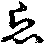理便言未枕(此解悞於後學)。或有釋云。謂雖身衣同處而無護心手脚不暫到衣所。故明出犯也。今云大會衣者。一須有心。二必手提方成。今雖以頭枕衣作意。然手脚全不暫到是以明出犯也。下文自釋曰。若手脚至衣所不犯。證知不謬同日是身分。何故手足至衣即不犯。大德云。手脚有執捉之頭無執捉之能。又引十多例成同義。清依此解不在疑壞所釋文徒昏鈔意也。外道者九十六種等是。門屋一等者。正辨分齋也。同見者。謂有一類外道同是空見。或同有見。亦有亦無非有非無。於此同中。但同一見。是名同見。同論者。有一分外道。同是言論等。名為同論。若依約作樂人等來往遊行經營住處於中。即有同別界如前者。指同挨界中別堆共住樂同一部樂。而衣食別聚處等。等取造食及大小便處也。作食別取水故。即是別界人衣異處所以失衣。若同屬一主者。謂戲笑人部黨雖多與同屬一主衣食。並同隨所置衣不失。謂上失者。是情礙也。屬主若多情必不一。故有礙故。多論重舍者。謂是樓閣也。辨相可知。云上至元者。問。上來如許衣界總是同分。文中何故此言四分無文。答四分雖具有名。然於辨相是無。皆引外部類例而釋。以為允當。故知此言無文者。是無辨相之文也。若一向全無即同向下四界通。依外部故思之。
云八至餘者。多敝露者。謂一面有壁。三面無壁是多(此二據西天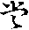。若此土即不爾也)。若此堂內護衣。後面有壁。齋壁即是界。若前面及兩頭無壁。即齋詹際雨滴內中影覆處為界。庫界者。約明內以辨衣界體也。
十一阿練若界等者。蘭若無界者。然謂逈空野。無有樹林。若有樹處自成樹界。若爾何故律文。約八樹中間等耶。可引注文釋。通云。假以樹量大小也。八樹中間者。今釋空處。不知幾許為界。假用樹量。實非有樹也。七十有餘者。明此律衣界八樹七間。計有五十八步四尺八寸。兼勢分十三步。合有七十一步四尺八寸。故曰有餘也。
云次至用者。道州井水。此曰當律名相。俱無全引他意。共成行事也。
云十二至不失衣者。十誦弟子為師持三衣在道行前後去師。遂即值明相恐失衣。白佛。佛問。相去幾許。今量之得四十九尋。佛言不失過是則失。僧祇道中臥等者。亦准前文例解(玄記至此二錯)。
善見等者。此謂衣在界內疑心。謂在界外。不慮失體故。不失受法也。律云。失想界外為言者。鈔主簡異。謂律開緣失受無罪。夫中衣實現在忘起想心。謂賊持去出於界外決。謂失體作在外心。所以失受。今則不失疑心。恐在界外。不慮失體。衣在界內。冥然不失。明出不犯。若弟子夏未滿者。寶云。未滿五夏。不離依止非。謂安居未滿。謂此弟子本無離。師之心。以貪法味。以法如師。故開無離。師罪師衣。在界外故。得離衣罪也。
明了論等者。論云。善解三衣六憐愍諸比丘。故有六因緣。離三衣而不得失衣罪一。僧羯磨所作。此有二種。一迦絺那衣。僧和合所作。二為遠行及病人。僧和合所作。此二並由和合作羯磨。雖離衣無罪。今合此二為憐愍。二依他所作如布薩界。有二種羯磨。光結布薩界。後結攝衣界。極大三由旬。令用量也。三不離所作者。以波闍延樓。及剡浮樹樓。高千由旬。雨水滴所及處。是樓樹界。以此例餘樓樹亦爾。四垣墻所作。謂伽藍及舍中轉車方便所顯。如後釋之。五露地所作。如比丘行路四十九與度處相對覆地。直身申臂斜衣各攝一角各相及。許不離衣。兩人相逐。一人擔衣。或在前後忽覺夜曉看前後擔衣人相去遠。心疑未知失不。即語持衣人令住。自亦住令持衣人倚處一尋一[打-丁+(林/之)]。亦弓以弓量度地。四十九弓地。齊此為限。更取三衣[宋-木+取]長者。斜牽兩角。彼時覆地。直身以脚際向弓頭所及處向此人。人亦覆如前人。若相及不失衣。住處時節。所作處度。謂阿練若時。謂夏安居中住處。又恐失衣。佛令以衣寄餘處。亦夜得離衣宿不失。轉車者。當第曰垣墻憐愍也。了疏云。言轉車方便者。比丘出界值明恐衣行至寺門數步。不知如何。佛憐愍故。方便開之。令取一杖。以隨伽藍用。何等為四相。或塹或籬墻等。隨其高處。將此杖量之伽藍。若以壍為相者。其壍必有大小深淺。若廣與淺量廣為量。若狹與深取深為量。若籬墻為相取[宋-木+取]高處量之。若四向總佉淺。即隨界邊有樹等。取極高者。用杖量與取高處為量。乃將此杖一頭量車中央一頭出車外置。明相出時身至之處寺門邊相去之間迴轉。此車若杖頭及墻院令此人住昨日處所倚便轉車。若杖頭撥著。此人則不失衣。不及此人。即失衣也。於第六中後有二。一大小便難。二他加行難。不失鈔文。自引了疏。解甚分明。覺者可委也。
云十三至等者。州界者即誦也。水中可居曰州。即今水中沙洲之類。
十四肘者。正辨護衣界體。計曰步一尺二寸。有人來往者。王及作樂人女人等。是礙即失衣。故水界者。謂約淺水以辨也。鈔初引見論。據水為言。與陸地別。衣在岸上。身入水即失。次引祇文。正明淺水。在此水中。不妨行李故。前後相去。得二十五肘不失衣。是護衣界體。計有七步半也。若船上入水即捨者。衣在船內身入。水中即。失此亦據深水以說也。井界者。或置衣在井欄。傍四面。各取二十五肘。計七步半。以為界體。或井內但齊內面為體四面。更無二十五肘也。要須澠連。方免其失。[宋-木+(三/日)][宴-女+七]例之內外可委也。教倉也。
云此至是者。結也。大小如上者。謂上十五種皆據護衣界之正體如僧村二界。以四相為體。樹界取日中影蔭及雨時水不及處為體。乃至井界取二十五肘。或井內為體如是大小。並如上文所說。若准四分加勢分者。謂隨上來自然體外不論大小。一例加浮勢分鈔引律文是也。即曰面各十三步。
云諸部無勢分者。謂四分釋僧界。即無勢分。自然衣界總有勢分。准此文獨有。若外宗衣界。並無勢分。但齊戒體。體外即失。如祇文寺。門外不提戶釣。即失衣等。可不例解云善至會衣者。同既云。諸部無勢分。見論之中何得有耶。可引鈔釋云。差見中無也。若爾何故。彼云約不健不羸人擲石落處等。豈非勢分。更引鈔答云。彼有擲石之文。別為除事等。謂擲石雖同所為事別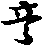。彼文明盜戒處所。謂蘭若聚落。俱是盜處其中有物盜取。即犯云何聚落界。謂取不徤不羸人盡力擲石所及處。取石落處。不取石勢轉處。齋此是聚落。四分中。但言擲石落處。不云不取轉處等。文非明了。故不取之。見論雖為餘事。與文決了故。取為准也。諸師評云等。往古諸先德。咸共評論。可有十三步也。十五自然通著者。謂此將一十三步。通向前十五界體。四面而著。雖人衣互出在體外。猶是十三步勢分內。亦未失衣。必在十三步外。即成失也。准不通法界者。謂擇衣界。即不通勢分。但心於界體。必須入須手分。即成會衣。若但在外。亦即不得也。所以爾者。首疏云。有法故無。無法故有相。疏云。開不重開本結衣界。猶是一開。若加勢分。大成疎慢。故不可也。
云僧祇至易重者。此文為談上來法界無勢分也。准祇云。比丘著上下衣入聚落有女人語比丘言。今夜欲供養形像。當助我料理。比丘助日沒故。欲還殷勤百宿。餘如鈔文。以門屋梁界內者。謂既不得入。但住門下以手提梁即不失衣。以門有南北梁。連於門下。與衣同界。因作四句。一捨衣不得罪。謂至異處宿遠捨衣借衣時故無罪。二不捨衣得罪。至他處宿。但借衣持。不捨本受者。明出後還他衣不捨受法却受。是衣得壞威儀者。三亦捨衣亦得罪。離宿犯者。以輕易重。四不捨衣不得罪。衣不離身。今鈔文前段當初句。後段當第三句。思之。
云若准至犯捨者。謂雖作此投梁內手門孔中。約內無礙方得。若有三礙。不免失衣。外護不成。若有三礙衣隨身也。及界外事者。水陸道斷急難等緣。名界外事。故開怒捨。若不作上三事者。一謂無三礙須至擲石及處。二有情染二礙須手捉衣。三若有隔礙要須遙捨也。
云上至中者。戒疏云。僧村四相周[打-丁+坴]是強。樹車共界體約不立。餘十三界。各不相擇。故云諸界相望不論強。初然其蘭若一界[宋-木+取]弱。儻有樹車。來此言處。菓若之名。亦不顯矣。若將僧村二界。互相望者。玄云。強村僧弱。何以得知。故結衣界云。除村村外界。若無村時現結怒除。若現有村現除怒結故知村強也(已上取文)。淮南亦云。村強僧弱彼擇曰。若三五僧。在俗家中。但名村界僧界不起。纔有俗人男女入來伽藍中住。便有村界起。所以律文令除村也(與前解意同)。法寶云。上之二說俱非雅當。且如俗人。入伽藍中。露地住時。有何四相。名為村界。今約義明。但為結人。男女在藍。障礙取衣。不得自在。非是別有村生。律文假令除村。亦是除其妨難。何處有其村體。以此而量。故知。僧村二界相望。並無強弱。思之。樹下有車界等者。乍觀此文。似有強弱。以樹下有車界占。即車界強車外有樹。被樹界占即車弱。今鈔意。但取不礙義邊。是無強弱(此釋有理)。又樹下有車。車界雖生。而無勢分。以在樹內故。不妨其樹。却有勢分。若車外是樹出車屬樹。更無車之勢分。若出樹至車。亦無樹之勢分。若僧村二界下。明伽藍勢分中。若有樹車等。界則衣樹車界。護衣於樹車界外去藍邊有空地。即平分勢分。故云中(去呼)分勢分。餘皆例此可委。
若堂庫有車船等者。謂堂庫四面有障假有車船等。在中但名堂界。以強收弱故。若爾。前來樹下有車。何故樹不能擇他車界。可引鈔通之。不同樹車等謂車在樹下及場上時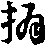揚四面。且無障清收摴。是以兩不相礙。如淨地不周等者。引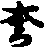例成上義。如伽藍四相周便有攝食義。即須結淨地。若不結者。有宿煑過。藍相不周。段食在內亦無失。以無收攝之義。不可類解。若互錯涉等者。謂庫堂是強。能持車船。若餘樹車等。不能相枝。雖有文涉。但自是列界也。餘如戒疏者。彼云。未顯兩相相接通成護衣。所以第三明於彼此不相收持。文云。此藍非彼藍。乃至此樹非彼樹等。雖互錯涉別界所收也。
云第至種者。謂上具列六緣。此當除五緣也。有緣浮列七種者。汎廣也。
云一至羅者。或對首心念者。或者不定也。有人對首無人心念住。文以輕易重者。非謂非法。開離衣一向無罪。今易離宿重提。但有缺衣之輕吉也。四分老病比丘者。文云。時有一比丘。有乾痟病冀掃僧伽梨重。此比丘有因緣。欲人間遊行。以此緣。即顯衣病。互有不成也。注文三十已去名老者。玄云。多論文也。或准俗秊三十為一世。一世既過當老位。大德曰。今約夏論。即俗秊五十。可當老位不取。初解離衣法如疏者。是首疏。彼問云。離衣得幾月。卷曰隨乞長短。或乞一月極至九月中間。延捉一任當時。若中途病差。及衣輕限滿等。則不許離。若准四分。得一月離五分得。前安居人至來秊四月十六九箇月。後安人得八月所以。爾者。以夏中不許遊行。若准具論但以病差為限。又上所離衣。是僧伽梨。非下二衣(准此四分)。若依五分多論。開離七條。由入聚落。須大食故。五條常彼一向不許同離衣為約。得法日以論為約。離日以數答。但從離日而數也。餘如文。
云就至會通者。前三得曰法離者。謂第一別人作法對首心念。二對僧老病等。三對處結不失衣界是也。後三無法離者。第五王路隔塞。六賞勞。七五分僧俗六夜蘭。若何可知。得罪分別等者。初判一向無罪。二重明第五失衣不失衣。謂難忽生。隔不得會。既不得會。心即忘却會衣法式。不得往持。即斷故失。不失如後者。恒懷頂受念念不斷。思靜即會。即不失衣。故指後開緣中也。明初在一向無罪中辨者。據其難緣。縱使忘斷失受。非情過故。一向無罪。問。不料簡第一緣。答第一一向是罪。以輕易重。故不料簡也。對僧作法有緣時在者。病在衣重迦絺那衣未捨。是有緣一八九五月。是時在也。限滿者。假使有緣為時限滿。故失衣得罪。餘一一准思者。除第五三二文中。明忘在外三緣。是餘一一進退。皆准於此思也。知而會通者。思與。若知通舍前之三種。餘不繁錄。
云律至諸部。別辨不犯也。此謂失體者。四分五分失相無罪。謂決心作賊持去之想失。其衣體然衣實界內想心。謂失即失受法。即是捨心無情過。故衣不犯捨。善見言不失者。師主疑心恐在界外不慮失體。故云此謂失體也。不同見論之中。體法二俱不失。以弟子將衣。先入界故。前言失受事隔不知等者。却牒料簡門中。五中隔塞。或忘斷故。失衣文也。既彼示同此難。何故言失鈔。通云。事隔不知。知正辨所以也。事謂難事。彼此事隔。不知思會。經明失受。由是雖故。不犯捨也。此即恒思會護。但取會無由。雖則經明。不失受法。前指不失如後。正是此文。進退者。律文之中。前明犯相。後明不犯。進向於後。即是不犯。退却向前。即是犯也。前無非攝護之人。比類二礙。退就犯位。失衣犯捨。若恒懷攝護之人北其二礙。進就不犯。失衣無罪。又有不立染礙等者。敘古也。古云。據其初緣置衣在俗女處。往取形露招譏。豈非情礙。此不通諸部者。破古也。十誦文中。具有染礙之義故。
云問至之者。如文。
云且至之者。廣如注疏者。彼問云。如或開緣何分勤惰。答諸界相開。並為奉者。必有惰學根本。非是通開。羯磨疏中。衣食二緣。廣有成敬。自餘物略僅知與已。
云月至三者。釋名者。開齊三旬悕望得之名為月望。此是所防(云云)。
云此至界者。但三衣是上根人也。畜長下根。不在此例。故云不須此戒。
云亦至犯者。列緣也。一故壞三衣者。新衣不開。二財少不足者。若衣財足。亦更不開三為換。三衣者。初戒不開一月明。須為作三衣。以貿故者。四不說淨者。若說淨無過。五無犯者無緣。注云。同長衣即失奪燒漂也。六過限外犯。末過無失。如下廣列。
云此至長過者。初十日隨得作成。若不成衣。至十一日犯故住。或云。若十日中同衣足者。截割不者。至十一日。隨衣多少並犯捨。同衣者。布與布同。絹與絹同等。第二位從十一日。後隨日得足須成不成。足者。明出犯捨。若未足無過。第三位第三十日。一向限之者。戒疏云。無論得衣。俱同說持。明日已後。更不開也。既云俱同說持足。則加法受持不足且持諍說(不同順正約不得說淨名一句限之也)。
僧祇等者。謂點淨也。庶行(尺庚反)急竟者。即疎疎行針貴在急了。或云麤行(戶明反)隱竟。即麤陳作行位也。今取上解。約當日須成。是急義故。此律下可知。
云若至也者。明三俱故。欲換三衣。各開一月。即將九十日。分為三位。有通求別求。若通求云隨得衣財足。即作者。初十日常開(如上)。二從十一日。至八十九日。為第二位。隨得足日。成受持不者。明出犯捨兼染餘未足衣亦犯。若全未足許向後求三第九十日。若得作成。受持不作。至明犯捨。同前一向限之也。若別求者。標心乞□。布作五條。紬作七條。絹作大衣。亦如上作三作(云云)。同體未無犯。若足便須作成。若不作成兼染。餘財亦犯(云云如上)。非正替者。恐人疑云。此是三衣財體。無長可防。何以犯耶。今云現有三衣。在此未作衣成未能替故。衣若不作成衣受持。即為長物故。
云餘同長衣開者。淨施遣與人失奪五相心。及迦提等。八緣開不犯也。
云取至四者。釋名者。虗心送與領納屬己名之為取。離七世族。故曰非親。尼者簡下二眾。衣者唯五衣也。此是所防(云云)。
云五至俗者。虗心送與領納屬己名之為取離尼自與使人受。二使與自受。三使與使受。四自與自受四句皆犯也。既云與人何簡道俗者。破古人也。古云。尼五衣外有長衣得施。下三泉不得與僧施受俱犯。今破云既云等(云云)。但使大僧先無求心得受。又據或是受持五衣。今此所施後是長物有何不許。
云律至不犯者。注文。一高祖者。七代[宋-木+取]尊故曰高。去身四代。高祖姉妹。即高祖姑。女即曾祖姑。二曾祖者。去身三代。曾祖姉妹。即禰祖姑。女即祖姑。三稱祖者。父厲曰禰。法寶引俗禮云。祖已後為立庿。以栗木長尺二狀似書筒。於上提官銜號為木主是在庿中四時[水/王]饗。今翁之姉妹即姑婆。女即兒姑。四父五己身。父之姉妹即師姑。女即己之姉妹。六七可知。問夫論世代。合據男辨。所以約女以明。答凡明世代。合約男辨。今辨戒緣。須依女說。此皆親尼不犯也。餘可知。
云使至五者。釋名者。駈役外尼曰使。非親洗濯穢服曰浣故衣。此是所防(云云)。
云律至提者。問浣染打等三各別。合分三戒。何但制一。可引鈔釋通云。浣染打實是三戒(此明離意)同猶一衣生者(此今意也)。謂相由致犯用浣故染。由染有打也。此戒業重者。重互兩解一。一上聲呼。如下鈔云。即今弟子因交致染。故二云平聲呼如下引律院染打於一衣。上結三尼薩耆。即重重犯故(僧正)。
云五至戒者。如是互作五句皆墮者。一令非親浣而親洗。二令非親浣。而親非親共浣。三令親非親共浣。而親自院。四令親非親共浣。而非親自浣。五令親非親共浣而親非親共浣。五句並犯。或有畜尼弟子者。是檀須弟子。非謂依止。以尼通依僧故。餘如文。
云三至吉羅者。自與使與四句皆犯者。一自與尼使人受。二使與自受。三自與自受。四使與使受。四句雖殊。皆尼目浣故結也。准此無重犯者。古云。一衣之上無浣染打三尼薩耆。所以爾者。謂纔浣竟此衣即是以犯捨也。假使尼更染打亦但結吉。若於三衣之上。即有三罪。謂准十誦多論之文。無重犯故。一衣無過。有重犯者。今師釋也。今云。此本是清淨無犯之衣。比丘將付尼時使語彼云。與浣。浣了恐色脫。即與染。染竟必致即以打。如是一時落彼彼作未竟衣。未結犯不成過。衣三事畢時三罪頓得。若令作三。但為作二決心罷者。衣得二罪後忽更打只得吉也。若但令染與不染打。此得一罪。後重染時成有過衣。亦但吉也。使尼湔者(子先反說文曰半洗也文音淺)。謂使尼湔處有罪。餘不湔處雖無罪不可割破。且將合捨。
言五至羅者。比丘尼薩耆吉羅者。謂先令浣故提。未淨重使浣故吉。云不犯等者。如文。
云從非親至六者。釋名者。以非七世。故曰非親。未入道眾。稱之為俗。彼不請召。但自求不見。故號無衣。此是所防(云云)。
云多論至彌者。制意也。是好非好者。謂持戒破戒也。實好犯墮。是自代其功不好。云好是誑委他得物犯重。注文無戒沙彌者。謂無十戒也。以十戒中亦不許捉寶故。
云具六緣者。總標犯緣也。云一至犯捨者。非謂迦提月中開從他乞者。釋疑故來恐入疑。云迦提賞勞用乞。何故要須失奪燒漂方開。鈔文簡濫。故云非謂也。必是無少交不濟冬者。謂約貧乏總無長財。即開迦提月中乞衣。若有長財。亦不開許隨量。乞衣者。隨三夜量。夜量外不得。更多貯畜即是貪故(順正記十三各隨重乞不准波句通違篇本)。四肘者。七尺二寸姬尺已上可知。寒暑相者。冬月著生等。方便說法者。規前利。故緣中一條者。衣曰緣中一修也。
云五至中者。如法治者。玄云。通輕重也。此是僧物雖開暫用。今不還僧須衣夷法治之。非吉羅也。如雜法中者。諸雜篇中彼有通賊方法等。
云律不犯至罪者。通前五緣者。四分開通中奪失燒漂。曰更添五分衣壞一緣成五也。非法求施施非法求二俱犯罪者。謂邪命乞求是非法。求施俗人知是非法。故與因結施物成他業果。若俗不與僧。但有心未成果也。亦要此解記中引七百結集。文太繁不敘。
云過至七者。釋名者。失三受三。名為過分。從彼與受。乃曰取衣。此是所防(云云)。
云六至知足者。五過知是者。古人失三受三。即是知足。失三受四日。是過知足。今師師失三受二失二受一除。則別求失一不得受。今失三受三等。即過知足也。尼五衣例此六領受犯未受無過。
云律至別處乞者。如文。
云四分至交犯者。前戒為他不犯等者。簡濫也。前戒自為己即不得。若為他不犯此。或自受得衣與他故。犯由情謟故。若爾既與前人。何故自犯。答假是為他要自受了方與。故入手時。即制與犯不犯者。鈔文存略。若知足。若減知足。若依細薄不窂二三重作。不為失故施。一切不犯。
云勸增至八者。釋名者。數遣。答縷名曰勸增。隨縷與直。故云衣價。此是所防(云云)。
云四至指墮者。戒疏。問云。勸增戒中一縷便犯。乞衣戒中四肘方犯。何故不同。答本施主無心乞肘。任其多少。惱義是微。故曰肘犯。勸增之中。虗心限約不定。今乃嫌少索多。[企-止+立]惱之情[宋-木+取]重。不問多少。同犯罪也。
云勸二家至九者。釋名如前。
云制緣至得者。制緣同前者。制犯六緣同前(云云)。勸令二家為異者。謂前但一家今二家。勸令共作一衣異前也。除殘文義。如戒疏述之。
云過限至十者。釋名者。越三六制名為過限通迫淨主。故云念切索衣。此是所防(云云)。
五至犯者。四過分索者。若准律文。三語六默未犯過即犯。又見論云。純語往索齊六不犯。過六方犯。純默十二未犯。十三方犯。語默相參。九反未犯。十反方犯。如是類知五語二默。七反未犯。曰語四默八反未犯。三語六默九反未犯。二語八默。十反未犯。一語十默十一反未犯。全默十二未犯。十三方犯。以一語破二默也。問。默然索者。可住幾時。答祇云。如人入庫取者。著店上頃。又如褁幞物頃。便須去也。見論又云默者。不得語。喚坐不得坐。與飯不受。若請說法問義總不得答。彼若問。何故至此。答居士自合知之。
云律至不犯者。即相布施者。約本施主說。非謂淨主作此言。思之。應以侍者。隨淨主所期之時也。波利迦羅。此云助衣身也。或有難云。忩切索衣戒中。有淨生生者。且淨主因畜寶始有。此既未制寶戒。何故有淨主耶。答此戒理合在畜寶後。但為結集家。或飜譯者。安布錯也。思之。
云乞至十一者。釋名者。梵云高耶僧悉呾利。此云野蠶臥具綿。損命求作法衣。此是所防(云云)。
云四分至自入者。若雜以毳者。字林云。細軟羊毛。又尚書云。鳥獸皆有三種。一大毛謂之羽。二毛管。謂之拔坮肉小毛謂毳也。劫貝者。樹花也。戒疏云。若據前緣。至養蚕家乞綿。看曝招譏。今論雜作純野蠶。以疎說親。俱令斬捨。憍奢耶為絲中誦者之名。是綿名養蠶所得也。如秦地養蠶法者。如此土養蠶所得。彼無絲綿兩異。但總名綿。准如此間。則有兩別。乞之皆犯捨。故下文乞縷是其事也。臥具等者。多論云。三衣總名臥具。古人云。此相難識。今師實相此是袈裟。但以三衣總號。此土先無聞說。以綿作僧伽梨。此既本無。不知何物。而廣長有相。因被於教。故以翻之為臥具也。或云敷具者。三衣名也。多論六秊臥具正是三衣。若非三衣。云何乞法黑白臥具。並同此也。外國亦得作三衣。只為乞得。故犯捨。若他與離煞者手。即得雜一毛便等者。取憍奢耶。如一毛長雜餘物作。即便犯也。若用憍奢耶衣體。作紉處。揲垢膩處。是羊毛細揲。是憍奢耶。乃至經紬交迦穿雜。並是犯也。非悲不破戒者。雖離煞者之手。元是損生之命也。若受之四等之中闕其悲愍眾生之心。被非煞者。不乞自施故。不破戒也。今有一方禪泉者。續高僧傳說。衡岳思大師。徒眾在山。皆不著綿細。擣然夫以為絮。將布衭之用疑寒也。
云以至吉羅者。乞蠒自作綿無罪者。謂是幾了熟蠒。此家無蠶不是自藏了者。比丘乞得自作綿不犯為責。有虫吉者。虫雖已死招譏結吉故。云律中至羅者。如文。云不犯至疏者。若得已成者。謂前人蠶家乞得作成施我。我不自乞作無罪。仍斬也。餘如戒疏者。彼云若得已成者。亦須齊斬。此言甚切。云何可通。如五分他施已成。亦犯捨。十誦。若得已成受用不犯。有釋云。但是部列不同十分誦五。若得已成者。下列滅無開文但道斬壞。如何捨制與用他開疏。又問。既云非法受持成不。答如律通制。但云五大上色不成受持。至於財體並無得不之判。今准央堀經文。僧綿成施持。或人莫受設受非悲不破戒。據此斟酌滅有餘義。非急不錄。
云黑毛至十二者。釋名者。乞黑羊毛作三法服。此是所防(云云)。
云此至等者。此四臥具者。綿黑日六秊四臥。或並是三衣。總號昔人疑之。至今未決者。義淨三藏云。敷具者。謂是臥褥。一則織成。二則布體織成者。氍氀之類。布貯者。乃是栴褥之流。昔人聞此言之。至今疑情不決。相疏云。此相難識也。僧祇已下。引文證也。謂四分文中不了。但云臥具不言袈裟。致此疑懷不決。今引祇文栴僧伽梨迦鬱多羅僧安多舍尼師壇。亦云臥具鈔。越中間故。云乃至用除疑。故外難云。此四並是臥具。何不同前戒首之戒。不然則在後昔戒之。而於此戒中定之。玄云。古師見律乞為臥具。謂是臥褥前。或是綿疑稍薄後二。是毛不異於此故。於此中定境。後乃同收。前衣名同。相從總述。更有異解不正。云四緣至如且者。一純黑毛者。非黑毛是闕緣也。僧祇云。謂此毛大貴一兩直二三全錢。其體細軟。觸人眼精。皆不淚出。甚為難得。出四大國。一毗舍離。二弗迦羅。三剎尸羅。四難提跋。陀國時人。往彼求此毛。或得還。或死不返。諸比丘多求令彼家破招世譏也。二作袈裟諸比丘求此作三衣坐具。准除漉囊。是開緣也。如上者。如上或自作敬他。作成犯捨不成者。自為他作犯吉等。云不至犯者。若得已成者。戒疏云。不同前或假得已成。猶令斬壞此開故。無文令壞。若截割壞者。注文自釋云。無作[搬-舟+(士/日)]割。謂本作時擬壞故。若本無心壞作成。即犯也。若細薄疊作兩量者。注文自釋云。無意後得。戒疏云。細薄重披。謂初雖是細貴擬後作。麤賤者。相揲重疊與披。即非純黑不犯。准此即是。元意待後。付得故者。初作純黑未為犯也。攝熱巾者。謂食器熱。以巾褁手捉也。
云白毛至十三者。釋名者。白毛三衣是所防(云云)。
云因至犯者。因緣者。黑白雖殊。俱非應法。譏呵義等。故曰同前也。佛制參作者。諸比丘亦見前戒不得黑故。便以白毛作之。因制三毛參也。不依敬參是以犯故。
云五至犯者。列緣也。一三毛參作者。外難曰。此列犯緣。今既依教參。何得却犯耶。法寶為通此難云。據理三毛參作是不犯緣。今可加不以兩字。即成犯故。外難曰。既不以三參作。將何而作。若純黑犯前戒。若純白犯此戒。初緣若純尨即無犯。今云依制參作理非可犯。因制參故。便有拒違。向下自有增好。滅惡一緣。即違教犯。今須存此正是犯緣。不須加添。不以二字。思之。四增好減惡下至一兩者。欲明增減。先敘相參。如戒下文云。應用黑半毛三分白四尨也。假如四十兩毛。用分為四。言二分黑者。二十兩黑毛也。三分白者。十兩白毛。四分尨者。十兩尨毛。此謂四分澤津之人。語少不了。今准五分云。應用二分純黑羊毛。第三一分白。第四一分尨。證知前來二十兩黑毛白尨各十兩也。今不依此參。致有增好減惡。謂黑色增一兩犯提。約體貴重。故白毛增一兩犯吉。體稍殘故。尨毛增之。全不犯此耳。脚上短毛體極賤故。問。三毛俱參黑既體貴何故制以二分其數却多。答戒疏云。就同制或故黑多也。又黑色雖貴順法服相白。是結服所以不多。尨毛麤短多即無用餘文可知。
云減至十四者。釋名者。作三法衣制有秊限不得違越減於六秊此是所防(云云)。云六緣至犯者。如文。
云僧祇至不成者。未滿六秊不得。更作者。謂外三律中。但未滿六秊。假捨故者亦犯捨。四分不爾。如下開緣中明之。白羯磨眾一一不成者。謂作白不成。作羯磨不成。眾僧假和合亦不成。故云一一不成也。云四分至一切得者。別開不犯可知。云不揲至十五者。釋名者。慓名即是(云云)。
云五緣至犯者。若有心以故者。揲作成亦未犯。若無無揲心作成即犯也。
云此至不須揲者。後二俱句准知。謂作故如量。兩戒俱持。作新過量不揲。兩戒俱犯。隨十種衣通得者。謂憍奢耶。劫具欲婆羅等。隨一皆得。
云津不犯已下如文。
云持羊毛至十六者。釋名牒鈔(云云)。
云一至第四者。此戒犯緣具四。今依戒疏科分二。初前二別明。次後兩合釋(云云)。一是好羊毛至第二己物(此前二別明也)。今釋中。二初前標。後舉依他部。略明二。四分下廣行。當宗辨三由旬。及過犯之相(此依搜玄科鈔文也)。自持至第四者。此謂前標三自持也。後舉第四中間。僧祗略消二緣。上半是三由旬重擔俱犯。即是過限故(云云)。齊九者。三人各持三總計九未犯重擔。即過犯第四緣也(已上正釋竟)。或依法寶科為前三。令辨二。第四下別釋。第四所以注第四。兩字者。一為簡下四分。二為解上僧祗(此釋違疏文益失鈔意)。云四分至亦吉者。不得助持者。自擔三由旬竟使他持於限外。更助他得吉。若五分但聽持不許須戴背負也。若持餘衣者。恂遮羅葉草。餘物者。戒疏云。帽巾等吉也。云若至不犯者。毳裝(去呼)者。字林云。細羊毛作也。雨中披行。古來天子大夫服之巡行邦國毳繩者。以毛為也。除處毛即耳脚上毛也。准此亦是未擔之前。若曾擔毛三由旬竟。更持上諸物。亦犯吉也。云使至十七者。釋名牒鈔(云云)。云制至中者。犯緣具五。一是比丘尼。二是非親里。三是己故毛。四自己院染擗。五竟犯。餘如疏中者。首疏廣明姨母女人來。至佛所。但亦不坐。恐招譏等(云云)。如彼。
云畜錢至十八者。釋名。貯用屬己名畜情所珍翫為寶。錢有八種下文自須。此是所防(云云)。
云初中至經北者。次如上不出佛經者。謂經律論文。雖則通云八不淨財。須其過患。不應受畜。無其一二之次第。今上所列。初則田宅園林。[宋-木+取]後及諸重物。引是古來先德。如是安排前後。故云不出佛經也。
云二明至正解中者。玄云。釋迦一化凡所制戒不對俗。明唯斯一戒。對俗人制。佛告大臣若見受畜如此物者。當非我弟予。沙門四患即此戒是者。經謂涅槃等。律乃諸律。佛造大臣。日月有患。曰不明不淨不能有所照。亦無威神何等為日。謂阿修羅煙雲塵露。是日月大患沙門。亦有四患不明不淨不能有所照。亦無威神。云何為四。謂不捨婬欲。不捨金寶。不捨飲酒。不捨邪命自活。是名四大患也。所以大患准曰者。莊嚴論云。酒為放逸本。婬為生死原。金銀生患重。邪命斷善根。今此四中是其一患。故云即此戒是也。
云。二明至開畜者。禁重如後所明。如此文後引涅槃十餘處文。皆極數破。不令畜等。律中事在小機等者。住着小機。名為事在。未能無苦。故號小機。先須安身。然後進道是意狹也。容有開文。意攝劣故。
云第一至得受者。別人不開者。即顯僧得受也。向下引文證成一口。小房有資道。要容身小舍。別人許之為有資身長道之要也。
云二至說者。如雜法中。指下諸雜篇中僧地上種菓業得一然之類也。
云三貯積數帛者。標也。
云昔至[泳-永+宿]者。舉世夢傳者。舉遍也。夢虗也。餘文可知。
云四至畜諸童僕者。增一至哉者。欲過羅剎等者。經曰梵志將女施佛。佛不受之語。梵云。已受汝意。但吾以離欲故。不習欲法。時老比丘搖扇扇佛。勸佛受與我。佛呵之。告老比丘言。汝過去世曾為羅剎女或。今更被此女所迷。譬如有人取羅剎女納為其婦。其羅剎女生得子。是還自食之。食子既盡。復食其夫。愛女亦爾。煞慧命。故終墮地獄也。餘文如鈔。
云僧祗至如是施者。彼云。萍沙王來見尊者。自泥房因施民二百不受至於聚落。內百姓情欲供給要持五戒。終身即受善持五戒。自然得免婬欲。故守足。園寺五百人者。彼云。佛在王舍城。萍沙王往彼精舍禮佛。因問大迦葉今何所在。諸比丘答云。在耆闍崛山上踏泥。王遂往問。何故自作。答曰。誰當為我作。第二度來亦如是問。迦葉云。王頻有此言。但不見與。時王慙耻遂問左右。先有此言否。答有。王問是何時。左右云。經今五百日也。王遂下山。時有捕得五百群賊到。王問其罪至何。臣言其罪至死。王問賊汝能隨我語不。賊言能。王遂令與諸比丘作使。大臣白言。此是賊。能偷比丘衣鉢。王言我有方便。多給田宅。倍與飲食。彼必不比丘也。離竹園寺不遠。立為淨人聚落等。施非法語者。即行主排說之詞。花言艶語之類也。
云五畜生畜生者標也。
云律中至爾者。如文云涅槃至同者。剎利居士。皆入阿鼻者。謂不能齋食常住物故。善滿五人得受者。謂五人能辨自恣。并邊方受戒。佛法根本。令三寶不斷也。大集亦同者。彼云。若一村一林。有法師等。如僧網篇說之。
云四分至得者。如瞻病法者。彼引僧祗。道逢病比丘應求車乘駄載令歸。若病篤無所分別。不問牸牛草馬等。故知病輕能分別者。即不許也。無病不合者。遺教經云。比丘騎乘車馬一日除五百日齊含利弗。問。何以故。佛言比丘違禁法律人見生謗令他獲罪。老病即開。開船上不犯也。
云六至解者。末利夫人施僧布薩餞等者。十誦云。佛在舍衛城時。末利夫人。為聽法故。到祗洹中。問諸比丘。此有幾僧。答不知。以此白佛。佛令行舍羅數知數故後。即施餞比丘不受。佛言應受准聽受義應付淨主也。雜含等者。律文如鈔(云云)。古云。此是資要無過故聽受寶。但不應自為身受。若反前自為身。即不得鈔。鈔意不然。此云得受者。謂得受竹木。非謂錢寶等。注文者。若疑四分言中不了上有雜含經文。亦自分明。須木直黨木乃至須舍亦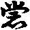人。若得為房舍受舍錢者。何須言其直黨。餘如正解者。指下解戒本中明也。
云七至得受者。重物者。或體用俱重。如床等二。體輕用重。如被褥等。氍數三肘五肘淨施畜者。此約[彰-章+丰]者。有袈裟量故。過量厚重者。即不開淨施銅拻(過反)。可知云八至主者。若得金寶咒願已還主者。三解。一云呪願施主已還付淨主(此說今非)。二搜玄云。還反本施主。為貿淨物。非為永還。法寶云。還反施主須得。不還不得。令他貿淨衣物。以文中一向不開故(任情取捨)。
云涅槃至依者。說輕為重者。謂豐時禁約。說重為輕者。謂儉時開聽。觀知我等弟子下。但明一衣。是說輕為重義也。鈔文從若諸已下。至依止已來。此明四依也。初據有人供給。則不聽畜。二無人供給。飢饉時即聽。豐時不得。三雖則飢饉。能護法者則聽。不護法亦不許。四雖護法。淨施則聽。不淨施不許。如是四法下。結也。我為肉眼說者。以肉眼不分別邪心。今為此輩說此四依。今驗邪正。若有慧眼。即月解分別。何須用說。若有三藏等者。謂毗奈耶等(云云)。云又至要者。此汶鈔文。是和會二經相違文也。十輪云。破戒比丘亦須禮敬。涅槃經文。制令不許禮敬。二俱是大乘教文。因何相違。鈔文滅云十輪據不知持犯者說。反顯涅槃約知故不禮也。亦不相違。又涅槃尊者。再釋也。以此經窮盡法厚終極之教。令不禮敬破戒之徒。可以依義用不亦得者。謂不用依十輪經文。據不知持犯者說。亦不因十輪。亦是經正翻實錄。何故不用依之亦得。可引鈔釋云。以護法故小小非要。意道。涅槃文以護佛法故。是大事。若比丘受畜不淨之物。自壞壞他。必沈惡道。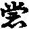大事。今若折拌。令彼不作是護法也。十輪經文。但以袈裟因緣。故令禮敬。是小小之事。非要依也(非由不也)。
云三至了者。如文。
云四至無罪者。受貿輕重者。標也。若以此八貿衣犯捨者。鈔文全依首疏辨也。彼云若以八不淨物貿十種衣。犯捨墮故(搜玄對此廣明。古解與鈔全乖。略不敘之。或有於此便論今義。亦未要預述。至下文自釋)。以衣得亦綿氀亦捨者。首疏云。以十種衣貿八中。六七即殘。及氍氀犯捨。餘六但吉。若以衣寶相易墮皆。以衣貿寶寶貿衣得墮。若將衣寶貿餘六種吉羅。約此六種自相夫貿得吉。若以此六貿衣寶二種亦犯捨也。此謂與俗爭價等者。正明結罪之由也。謂指適來提吉二罪皆約比丘。亦不合與俗人爭價增減以結。此合師正解也。問八種俱是爭價增減。何故結犯有於重輕。答。田園奴婢畜生等。不應捨法。體又微。但吉。二寶應於捨法。體復貴重。故不犯提也。若五眾但吉。亦據爭價說。此釋不違鈔文。不同古記繁雜。思之。多論等者。玄云。此文因便故有。謂犯捨錢寶貿得新衣。不知此衣犯不。故引多論說淨錢寶。與犯捨錢寶。貿得新衣。作三衣。百一物。並不須說淨。月百一外成衣不成衣。並說淨新得過無。若犯罪悔僧中者。畜錢迦吉對首懺。先畜寶迦違淨法提。應僧中悔已。貿財作百一物。不須復捨。已入淨故。若百一物外法衣一切說淨。
云正解戒本者。是上義門。今當正解。
云此至便犯者。文言手捉別時意者。古師云。此戒為畜故提。後九十中。約直爾提。是別時意也。今云。此戒准約畜。後九十中。但據提。不論為畜及爾提等。此戒文中言提者。自是犯後九十中捉寶戒。云別時意也。列犯緣如文。
云此至濫者。准此失戒者。玄云。失受體也。謂順敬即是佛子。今違教即捨法。佛既非師。則捨佛。乖六和義。則捨僧。既捨三寶。身則無戒(此持大過分也)。今云失者戒者。但據一戒。無表不清。舉例。如畜猫狗一眾無戒。不可眾僧盡捨受體耶。思之。佛告大臣等者。雜含云。時有珠髻大臣問佛言。前日王集諸大臣共議。沙門釋子受金銀等。為是淨。為是不淨。於中有言。沙門不應受畜。有言應受畜。我時聞已生疑不知。此事云何。佛言若沙門釋子受畜金銀。得名清淨者。五欲功德。應清淨也。准此文意。謂世間五欲之境眼意色耳意聲等。此五因貪故生。本是煩惱結意。不為清淨。不名功德。今若沙門受畜金寶為清淨者。上之五欲。亦是清淨。五欲既非清淨。反顯沙門畜寶。實為不淨。理非功德也。梵志書述者。增一云。昔有梵志名畜苦。從梵志師受學。既學通達。師為改名超術。受學既久。思報師恩。欲詣聚落乞物。偶諸逢婆羅門大禮論義。若得勝者。賞金錢五百金杖一枚金瓶一口端正女人一牛千頭。超術自思云。諸物不要。若論得此金錢之類。報師恩德。不亦好乎。即往眾中。有婆門多有皆慧。超術先以一問。問中合五百改義。舉眾了無知者。遂將上件諸物以賞之。超術云。諸物不須。唯五百金錢金瓶杖等。報師恩也。持物路行。逢人忩忩。定光佛出世。超術自思。佛甚難值。我今卒可持此物献。又乃思惟。我先有書。名為禮記。彼書中云。若如來者必不受寶。今貿蓮花。以上於佛。并解髮布泥。如來授記等(云云)。
云佛至除思者。劇者甚也。行商坐賈。纔見少利。便博易之。沙門貯畜。要侍商價。更甚於彼也。信佛法煙雲者。謂信知畜寶。是佛法之一患。如日月之患。患在烟雲也。矜恃者。孔安國云。自修曰矜也。出此無貪無罪之言。排其法律。即是輕撥大聖也。一分(平呼)之利尚計者。謂分毫之利心亦計之。舉少況多也。不及俗士高逸者。漢末魏初。青州管宰鋤圃見金。揮鋤與瓦石不異。王夷甫一生不言錢等。儒士尚爾。豈況高僧。而躭俗利。蟷蜋拒輪等者。莊子云。蟷蜋怒臂以當車轍。寧免破質於輪。問。飛蛾雖有投火之能之能反遭明之。表體法令可知。
云涅槃至油漬者。如文。
云四分至緣者。八種者。一金。二銀。三銅。四鉄。五鈆。六白臘。七木。八胡膝也。
云僧祇至羅者。生色者。天生自然金不假因緣名生色也。似色者。似猶像似金之類。則生似是梵言。金銀是漢語。或云金銀生緣者。梵漢雙舉也。捉得提者。亦是犯捉寶也。七山者。標也。七舉數。寶珍美也。一金者。說文云。金有五色。黃為其長。百練不變。久埋不生。從芊不改。西方所出也。二銀者。白金謂之銀。摩尼者。謂如意珠也。亦云無價(廣如卷初)。真珠者。亦云赤珠。謂赤虫所出。即蜯蛛是也。珊瑚者。紅赤色。說文云。石脂似樹形。出海中。車渠者。青白間色也。馬腦者。此寶形似馬腦。亦云玉石。上之所引依多論。若准諸經論說七寶。大同小異。第三是瑠璃。碧色寶。第四頗梨。即水玉。是五種取者。如下文五種受即是也。
四分是中等者。戒疏云。明捨錢方便。付淨主也。鈔文稍難曉。須細尋之。從若彼人取還直至掌之。齊此已來。據彼人不會比丘之意。謂言將物與他。不取順受。却還比丘。彼既內心不解。即乖淨施之法。故律云。即作彼人迷故。所以不成。物既現在。即作他物收取。令淨人常護也。鈔云。若彼人已下乃至受持之。齊此已來。此約彼人心中却順解前來比丘之意。再來取此物。即令淨人持與貿易衣鉢受持之。鈔云。若彼優婆塞。乃至持之者。此約彼人為比丘持物貿易得衣鉢將來。比丘即將新貿之衣。依法加受也。不作淨語得者。
云僧至之者。褁眼三施者遶也。欲令彼迷。方不記處故以。餘文可知。云若施至須者。如文。
云多至彌者。僧中次第行者。謂如今時齋家行錢。即須言此不淨財等。正明捨懺法則可委。餘寶說淨有二者。若內衣持錢寶來與比丘。比丘但言此不淨物。我不應畜。若淨當受。即是淨法。若白衣不言。此比丘不語取犯也。
云僧祇至儔者。祇云。佛在舍衛國。時目連將專須沙彌。食後到阿耨池上坐禪。時沙彌見河邊金砂便作念。今當盛取此沙著滲灌下。目連從禪覺已運通擬還。沙彌為非人所持。目連迴顧喚沙彌來。答云。我不能往。目連問曰。汝有所持耶。答曰。身有金砂。告云汝應捨弃。弃已遂騰言者也。乃至老比丘等者。祇云。有比丘將一沙彌看親里。路經曠野。中道有非人。化作龍右達沙彌。以花散上。讚言善哉。大得善利。捨家不捉金銀及錢。比丘到親里家。相看已欲還。時親里言。汝今還去。道中之食。可持錢去市易所須。沙彌受已緊著不帶而去。至中道。而非人見沙彌。在比丘後行。又化作龍來。左遶沙彌。以土坌之言。汝失善利。出家修道與捉錢行。沙彌便啼。比丘顧問。具述上緣。師令除錢。非仍舊右遶。以此緣白佛。言自今不聽沙彌持金銀錢。用此文證上。故不許捨與沙彌也。此猶譏類者。謂此沙彌捉寶罪輕。猶可治救。故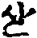貢致責。令其捨之。罪重根除神亦置而不責也。池神者。祇云。昔有比丘。至一池邊見蓮花。不取手捉。恐壞生故。而但嗅之。心中賞愛。池神呵責。比丘偷我花嗅。須臾忽有野象來入池中皆折碎。池神嘿然。比丘語神曰。我暫嗅香即見呵責。象今壞損何不厝言。神曰汝是沙門出家之士。合知法律。是以責之。畜類無知。何可為恠也。顯戮者。如暫嗅香尚致神責。況當違制覆罪不陳。清罪委知。無任同法。故云顯戮也。頰腫之債者。百喻經下卷云。昔有癡女聟。至妻家羞不食。後為飢逼。盜食生米。其頰鼓起。婦謂之頰腫之患。問其因由。因報不語。妻乃白父。父召醫人以火鑽烙。頰穿米出。法合可委(云云)。
云多至異者。玄云。此律不云求利。但言出家人不應。故古師云。多論與律不同。律貿得寶入手即犯。若用寶時。則得不應。寶體既無。將何以捨。故疏破云。昔人不立以財無再捨。罪不雙結。今不同之。見金以錢買金而畜。初易貿後畜。緣相是異。何不雙結。五種不同等者。疏云。貿寶七眾俱犯。衣唯二眾俗犯。二貿寶月。作教人為己同犯。除為三寶貿衣。使人不犯。三寶寶一制不開。自為衣則開。蘇油相易四捨法不同。寶捨俗衣捨道。五還財不同。衣捨懺還本衣。寶捨懺後易淨物也。但無衣食為異者。謂此戒但論金銀錢。已下販賣戒。衣食相易為異。
云五緣至前者。一是錢寶者。金銀各三。錢唯一品。金有三種。一已成金。二未成金。三已成未成金。已成金者。釵釧等也。未成者。金梃是(不同〔有〕云金鑛也)。已成未成者。鑄寫作器。未[羊*延]治者。銀亦三品。例此可知。錢若據理。亦令有三。未成據未有文象者以說。既未具足。世所不行。即非貴物。故唯一種。不同金銀三品俱貴。世所用也。思之。二互相易者。互結成句。則四十九。隨一為須皆得七句。初已成金易已成金。二已成金易未成金。三已成金易已成未成金。四已成金易已成銀。五已成金易未成銀。六已成金易已成未成銀。七已成金易錢。餘亦例此可解。
云律不犯已下。如文。
云販至二十者。釋名者。為利賣買。稱之曰販。此是所防(云云)。
云多至故者。制意如文。
云律至重結者。准餘部雙開者。據四分。此戒准約教。淨人易貿是一開。若准僧祗十誦。俱開日貿。反與淨人。但作知淨語。當於價直。即道俗雙開。又下四分衣法。亦開無淨人時自貿等。衣藥交貿者。謂四分律文。但有四藥及衣相貿六餘物也。准此有二十五句。初有之句。一時藥易時藥。二時藥易非時藥。三時藥易七日藥。四時藥易盡形藥。五時藥易波邦迦羅衣。以將非時為頭。亦准此所解。問既云准約衣藥於易。已外應無犯。若無犯者。何故文中。言種種販責。答只向適來句數之中。亦得名為種種。何必約一切物為種種也。數數上下者。增賣者。本賤賣貴。買亦如是。本貴買賤。本增直五錢。減買言直三錢。重減買者。本直五錢。言直一錢等。餘文可解。
云僧祇至罪者。相似貿相似者。玄云。謂瓶犯墮。此名相似也。若鉢貿瓶亦墮。名不相似也。若可食噉口吉者。外難。十誦多論。同是一宗。何故十誦噉口口吉。前多論咽提。答多論為利故販責得提。此十誦將上犯捨物金。未不為利。故新易物來知降違法。食體無捨。故口口吉。衣違捨法故提。四分販責買三但為利。俱墮者。舉價金高曰責。抑價令低曰買。買已規利更賣曰販。此三事但爭價上下。不作知淨語。各得提也。十誦據一物為語者。謂一物上販賣訖。方結一罪。故彼文云。若比丘為利故。買而不賣吉。若為利故賣而不買吉。若為利故買。買還已責提。約第三句責。買二業。故云據一物為語也。四分又不了者。謂上多論約僧中悔不應還。十誦約別人私責。買聽七日。當部但云若悔聽還。無斯兩判。故云不了也。共僧貿易應陪者。准五分云。時有比丘有拘執衣。四方僧有僧伽梨。欲貿之。諸比丘不與白佛。佛言聽易。若拘執價多。應治與比丘。若僧伽梨價多。應治與僧。若貧無物。即如文中所說(餘一切物並准此也)。
云僧祇至准前者。四藥隨物重物等者。祇有八物。一時藥。二夜分藥。三七日藥。四盡形藥。五隨物。謂三衣六物也。六重物。謂木床褥等。七不淨物。謂錢金銀等。八淨不淨物。謂真珠等。得觸名淨。不得著名不淨。此八相貿語時越。得物提。食錢持博蘇油等者。此約自乞向食。非常住鉢中之餘也。更有釋不正。餘如文。
云多至也者。謂是方便有罪果頭無罪之物。要須物捨與僧斷相續心。更不取作懺已還來。方聽僧作福等用。不爾直施自得不應。僧不合受。
云律至不犯者。不得與餘人貿者。謂白衣外道也。若蘇油相貿無犯者。外難。何故前來引律文。以七日易七日犯提。此更開無過。答戒疏云。蘇油相易不犯者。開外資也。前言犯得內資說也。准上衣法等者。謂上四分文云。貴價衣。令淨人貿。據有淨人言之。若無淨人。開比丘自貿。准此文意。不得與餘貿。若無淨人。理亦開許。十誦三度者。謂三度當價作淨語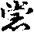等。餘如律本及鈔。
云畜至二十一者。釋名者。受持之外名畜長鉢。越於分齊。故云過限。此是所防(云云)。
云五緣至犯者。如法鉢者。一體如。二量如。三色如等。非油[木*毘]者。[木*毘]即燒而不勳。油即燒後用荏子油之。並不應教也。
云餘如長衣戒者。長衣開十日具有八。今指同彼戒疏。問。白色衣過限犯。白色鉢何不犯。答。衣染必成壞色故犯。鉢再熏多損壞故。所以不犯。問。衣過滅成受持。盔過減何不成受持。答。衣可截漬故成。盔無此義故不許。疏中減有數重問答。恐繁不錄也。
云六至中者。如疏中者。彼云。須在當界好[天/皿]。奪入僧中。厨為[天/皿]本寺故。不同乞衣。資用寬故。須迴本主。不用入僧。
云自乞至二十三者。釋名牒鈔。
云四至犯者。如文。
云十誦至吉羅者。戒疏云。十誦乞縷犯古。豈非防道。四分。開親以離指謗之緣也。看織作繀一切吉者。律云若看織。若自織。若自作。繀者。引云津子。以管澆熊也。趙魏間。謂之歷庶。方言不同。可既云自作等。非出家人之儀犯者。若爾下不犯文中。何言自織不犯。答上據織作三衣故自亦犯。下約小小物。故不犯也。
云不犯已下。如文。
云勸至二十四者。釋名牒鈔(云云)。
云論至吉羅者。六順受犯者。問。前戒何以織成便犯。此戒順受方犯。答。前戒道迴織師作成即犯。此戒自求順受始終。問前後兩戒。皆由織師。如何取別。答有四不同。一前戒損織師。自得縷故。此損縷主。二前戒損織師。不與價犯。此損縷主。與償便犯。三前戒親不犯。後戒俱犯。損義通故。四前是己物成即犯。此本屬他。入手方犯。
云不犯已下。如文。
云奪衣戒二十五者。釋名牒鈔(云云)。
云五緣至屬己者。甄下眾者。戒疏云。簡下四眾本非同行伴類。假奪但者。三不定與前人決定取者。正犯此戒。戒疏云。生爭故犯。本作得心。今奪生惱也。四句中二句者。因此一句。便作四句簡之。戒疏云。義加四句。初是向列四句之中。有二句犯。重標出。初受與俱決之至重也。疏云。此二則犯重罪。由初決捨屬他已定。故文云。施已還取是重攝故。四嗔奪者。戒疏云。自奪使人。祗中自與使奪四句皆墮。謂三衣也。若減量衣但犯吉。五得屬己者。僧祗四句。初合與別奪。謂一時與三衣。後隨衣奪犯三提。餘准知也。不藏者。猶面現前不藏舉未犯。但不對面移物即犯。不假載舉。戒疏云。謂對面奪也。未藏情疑屬己不顯。故約藏相結成墮罪。文云。若著樹上者。謂非對面。隨舉離處。則犯正罪。以無人可爭故結(已上疏文)。
云畜至二十六者。釋名者。貯用屬己之名。為簡餘三。故標七日。療患有功。稱之為藥。越日期分。故言過限。此是所防(云云)。
云辨至犯者。初一行鈔文是相略意也。次列犯緣中。五無緣者。律云。送與人。若失。若故壞。若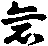等是緣也。
云律不犯至也者。此約過七日犯捨與僧。後處判依教不犯。若過七日者。戒疏云。初日過限。具兼諸失。主不合受。故與俗人。第七日者。疏云。既無宿觸。口法尚存。聽與僧食。若未滿七日者。疏云。限法不過明日。白二還主。理合說淨。已越七日無眼義制身外用。文中約第八日時三種處分。若至九日捨者。初二日是過七日藥。次一滿正七日。後四未滿者。若至十日捨者。初三日是過七日藥。第四日是正滿七日。後三是未滿者。若至十一日作法者。初四日是過七日藥。初五日是滿七日者。後二日是未滿者。若至十二日捨者。初五是過七日藥。第六日正滿者。第七日是未滿者(上皆三種處分)。若至十三日捨者。前六日是過七日藥。後一日正滿者(但二種處分)。若至十四日捨者。於七日中得者。總名過七日藥(准一種處分)。文中無戶誓者。三蒼云。北面窓名誓戶臼中鳴。以蘇油除除不鳴。誓窓泯周塗令明也。
云過前至二十七者。釋名者。佛開浴服預乞前用。此是所防(云云)。注文者。若據理過前求雨衣是一戒。過前用是二戒。然是一衣。復同過前。故合一也。
云過至犯者。一是雨衣者。此衣狀似漫安陀會也。二時中得者。三月十六日已去得者。皆名時中也。要是時中得。方有犯過前用。若非時得。如三月十五日前求。後若過前用但犯吉。以衣無再捨。此戒言一衣上重犯者。無重犯墮也。三過前受者。謂未至四月一日即加法。然又非過前求也。但是過前用而受也。
云四分至幕者。十種衣者。辨衣體。即憍奢耶等。如前文說之。三月十六日求者。戒本云。春殘一月在。應求雨浴衣。即三月十六日已後。至四月十六日。是春殘一月也。四月一日用者。戒文云。半月應用結。即四月初一日至夏初。正月半月開用也。舍勒者。是[打-丁+親]身衣。鼻奈耶云。半泥洹僧也。更有異說不正。
云諸師至洗者。今云如三衣披用。則不同古人言是戲圖也。下引祇文證上披用。垢液者。謂浴未了其雨則止。垢液未盡。更得著亦著入河中浴也。上言不得著入河池者。為無此緣。則不許也。
云多論至故者。彼論從三月十六日至盡應求作。若得成衣。四月一日應畜。若不成衣。四月十五日聽求作。若前安居人。至四月十六日應加法。若同三月要後三月求作。若同四月則前四月應用。今同得百二十日。彼同安居日受也。若准四分。四月一日畜用。不同十六日。若求未得。應用此文也。畜法如文。云僧祇至唱者。若至八月十五日限滿不作。餘三衣淨施者。謂捨了須說淨也。注文准此捨時通唱之文。初受之亦應通唱。今僧受雨衣。不須對首秉也。
云律不犯至者者。若捨作餘用者。謂時中求捨作。餘三衣等雜用。不犯過前用。若著時中求衣時中浴。有何犯失。浣舉者。謂時中求。而用時未至。浣舉不犯過前用也。
云過前至二十八者。釋名者。十誦云。今日不取。明日則無。是名急施。七月六日已前受者。名曰過前。至八月十五。若不淨施。故云過後畜。此是所防(云云)。注文者。戒疏云。此亦兩戒共制。非是一衣。不同雨衣一事生二也。前一衣上有受用二罪。今此兩衣合為一戒。若有過前取。則無過後畜。若有過後畜。定無過前受。謂前是順受故生。後是違淨故犯。
云過至犯者。三過前者。七月五日已前是也。四無緣者。謂失奪燒漂等緣也。後五緣者。標過後畜五緣犯也。三是十日內者。如七月六日受衣不便說淨。至八月十五日。即須說不說。至十六日。是過後畜也。乃至十五日受衣。八月二十四日須說不說。至二十五日。是過後畜。中間比知。文中正是指此十日內也。
云事希至法者。急施衣事是希。其法亦隱。上之所列且約大途。戒疏文中廣辨時非時法者。疏問云。何以非時受衣。一月五月外。更增九日。時中受衣。所以不增者。此約七月六日受急施衣。對時中受衣論也。答曰此中本是時衣。以急緣故。開非時受。所以時外開之。餘衣本無時限。隨受隨說故也。問。如長衣七月十六日受。十五日前開位。十六日接。是時分。何為不同急施衣。答受長無時節。隨受名非時。急施必接取。所以前後開。相疏亦云。長衣不與時衣相接者。但有前開。是以便犯。急施衣十日受者。前開入十六日。須是後開。兩開相接。越此分齊。是以無罪。又戒疏云。七月十五日長衣時內。九日足須說淨。更有餘義。非急不敘。
云有難至二十九者。釋名。恐怖逈遠。名有難蘭若。開寄法服。故曰離衣。此是所防(云云)。
云六至犯者。冬分非時者從八月十六日後。即是冬分。又非迦提月時名非時。何以得知。故律云。諸比丘夏安居竟。後迦提一月滿。在阿蘭若處住。有賊劫奪衣鉢坐具等。諸比丘畏賊。皆來趣祇洹住。謂夏中不許離衣。迦提一月任運許之。又復滿已。今從冬分起首。至明秊四月十六日已前。並是非時。蘭若有難並開離也。故云冬分非時。五無因緣者。同前失奪等緣也。
云明兩緣者。對古師。但亦一緣。故今標兩緣也。古云。蘭若六夜許離衣者。只為恐怖之緣。今云。准外部五分明了之文。別緣亦許。又准戒本語勢。云諸比丘有緣離衣宿。乃至六夜。既曰有緣。凡是因緣。總開六夜。何為恐怖難緣獨開。所以鈔亦兩緣。一是恐怖不作日限。二者別緣開六夜(別緣鈔文同說)。
云僧祇至夜者。謂祇五見三文。皆不作日限。然祇許夏內離衣。五分不許。前言冬分非時。即同五分制。令十日一度結者。與今見論少異。祇律比丘蘭若處安居。出外乞食。被採薪人偷衣去。且聽寄衣不作日限。五分佛在舍衛城。八月賊常伺捕人祀失。欲煞比丘。怖皆逃走。賊中知比丘法者。云沙門不離衣必歸。因茲遭難。由此佛聽寄白衣家。初不作日限。被虫濕損。因制往看。又數往招譏因制。十日見論。六夜一看衣亦爾。上來諸部等者。結前第一緣。必有已下。明第二緣也。
云四分至執者。聚落起過者。鏡水大德云。此言似倒。涉於聚落一宿戒。今可迴。又蘭若比丘寄衣。在聚落中起過。准戒疏及鈔意。謂制緣許蘭若。置衣村中。不作日限。後因蘭若比丘別事。寄衣聚落一寄不還。因茲起過。更約緣開至六夜(古師所釋與鈔全乖。不更敘也)。不顯緣相致令妄執者。謂四分文中。但云寄衣在聚落不還。並不說是何等緣。不顯此之緣相。致使古人云是恐怖制六夜故。
云今至許者。謂四分別雖無此諸緣。今准諸部而用。故云有緣皆開。不同古師唯執四分。恐怖開於六夜。故戒疏引僧祇。因往斷事衣重。故開六夜。五分塔僧和尚及他事者。皆聽六夜留衣俗家。故今鈔文。引五了論。皆有六夜別緣。證其四分雖不顯緣相。可同諸部有緣皆開。
云律不犯至說者。擲石及處者。謂入勢分由則不失也。若有情染二礙。必須手捉衣。若捨者。謂不會開對首心念遙捨。餘同離衣戒說。謂失奪燒漂四想不捨。衣不捉。不至擲石及處不犯。若船濟不通。道路險難。盜賊惡獸。河水瀑長。強力所執。禁命二難等。同前。
云迴至三十者。釋名牒舉鈔文(云云)。
云具至犯者。問。何以但言迴僧。而不言迴佛法物。答或云。許僧物者。於己有濫。迴容稱心。憙為制重。佛法之物。濫義是希。雖迴制輕也。
云律至也者。初已許僧者。決非屬己。定僧為作。眾多別少。心未決故。迴犯墮也。二為僧故未許僧者。雖非屬己。眾別未分。若迴犯吉。三已許僧者。定屬有主。迴犯重罪。以同盜常住也。
云僧至用者。我已施僧今施尊者者。謂能施者。自是非法。受施者無過。如從賊受施之例。但不得乞。乞成迴僧物也。
云四分至重者。並為未決定者。物雖行僧。由未定屬。自迴入己得提。迴與他得吉。若決別施屬主已定。若迴此物。望損於他。隨前犯重。迴畜物者。且約畜結。迴此自恣僧物與彼。應還作吉悔者。此屬已定。迴即犯重。何言吉悔。謂勸迴與彼。即得吉也。而物實未與彼。若物與彼。即是不還此僧。便成重故。彼此一人決屬故。迴即犯重。准此一人是定屬。無別相對辨其未分。有僧次來。當次之人。亦是定屬。而迴與他。望損此人。應得不得。故成重也。
云律至不犯者。許惡勸與好者。即持戒為好。破戒為惡也(已上二母段不同總是釋第四篇竟)。次明九十單提。
中分二。初總標。次別釋。初云九十戒。
云小妄語至一者。釋名者。言非稱實為妄。彰在於口為語。簡異於大。故標小名。此是所防(云云)。
云此至一切墮者。謂凡在制戒在篇者。皆從恚犯居。故此徵云恚犯為先。因由何事。故牒起云。引戒人多恚犯者。良由已下。正明所以也。謂無始時來習妄語業。熏成種子。積在藏識之中。故云妄業薰積也。此妄種子服伏藏識不少。故云尤左多。故隨塵境者。謂此依種而起現行。故云隨塵。染等境動。則虗妄搆架而造惡業也。不思反流之始者。古云。謂不思反生死流之始。歸真如之原。今謂初受戒日則誓斷一切惡。今是志誠時實語時。皆是反流之初。今不思量。但順其業種。恒事妄語。[(厂@((既-旡)-日+口))*頁]必洛形也。以此安生者。以此虗搆妄業。安於一生。要當至死方住。故云為要當死。若如是者。不能排蕩藏識之中。妄業種子。出家順生死業。信此可令人悲。故云良可悲矣。嗟歎意也(上依搜玄約句釋竟)。或依法寶科鈔句云。以此安生為要(是上句也)。當死定非排業(是一句)。意道。用此妄語之業。以安生之身。為其要妙。當至死時定。不能排蕩此業(此解亦是一途)。加以等者。前來妄業薰修。動便成妄。故意為之。今重由約境之虗實。但違想心便結。故云加以也。犯無定境者。境通有無之無定也。但使違內想心者。如實不見張人想心。謂是見張人。後有問者。答云不見。便是遠內想心。何論外緣虗實。謂不見是實。想心是虗。見則反之。餘例知也。
云六緣至解者。如文。
云多論至業道者。四句。初一如鈔(云云)。第二是兩舌非妄語惡口。傳他此語向彼說。作分離心。故是兩舌。如實說故非妄語。柔軟說故非惡口。第三句。是惡說非妄語兩舌。傳他此語向彼說。庶橫說故是惡口。如實故非妄語。不作分離說故非兩舌。第四句俱得三罪也。濟語者。非時語。無義語皆戲調心。名濟語也餘曰三業或合或離。濟語一種不得相離也。釋云。餘曰三業者。妄語兩舌惡口也。此三心通有濟語。故云不相離也。只如妄語說不稱時。若妄語者。必是無義。或時妄語為調戲心。凡是妄語與兩舌惡口。皆合濟語。一種也。一時作二三四者。一時作二者。妄語即有濟語。三者兩舌。四者更加惡罵。十業之中越其意二。故云乃至八事。何不至十。以意地中貪等三心。不一時故。貪嗔二心相違。不同時也。若據自作二事教他為六一時戒。故得有八。若但令他唯得為六。即口四過。并煞盜身二也。婬要假於自身一支。并為無業道屬癡成八。於一時中。八業成就也。
云四分至吉羅者。四分五分法師比丘者。四分因象力釋子。五分因沙蘭比丘。各聰明才辨。一切四眾外道沙門婆羅門無能及者。遂以非為是。以是為非。知言不知。不知言知。恒以巧辨勝人。時諸比丘莫不歎伏。問言。汝論義時。意謂為是為非耶。答言。我實知非。耻墮負處故妄語。比丘舉過白佛因制也。僧中妄語等者。玄云。是五分文。彼因慈地謗沓婆故。佛語慈地。若於堅信比丘前妄語。罪重於煞無數眾生。於一堅法比丘所妄語。獲罪過百堅信。如是展轉於僧前妄語。罪重於百羅漢前也。謂四人謂前誑罪重也。何以故。凡僧受誑生信故重。聖人識非不信故輕也。前言堅信。謂是內凡已去。得四不壞信故。堅法者。謂得無漏法苦忍。初心已去。此法堅固。難可破壞。故名堅法常令推寄有本者。謂若有所能。推屬於師。或推聖教。則無過失。縱有乃屬前人也。不爾斧在口中者。故多論云。凡人生世間。斧在於口中。謂出語傷人猶似刀斧。儒宗云。一語傷人。猶如釰戟等。
律云。見聞觸知者。薩婆多云。若境由眼識所識名所見。謂是色也。具五緣。一清淨眼。二色境。三假空。四須明。五作發識意。若境由耳識所識名為所聞。謂是聲。具四緣能聞。於前五中。但除明緣也。若境由鼻舌身。三識所證名所覺。謂取香味觸。具三緣一三根不壞。二有觸塵到根。三作發識意。若境由意識所證。名為所知。謂意知一切法。謂法境是。但具二緣。一意根。二發識意。問。何以鼻舌身三。合為觸耶。答。以內取境故。要須三境逼根。方能取得。然須隔越此子。鼻根隔三分極微。舌根隔二分。身根隔一。雖爾總名合中知。謂此四是違順之本故。八句皆犯。謂不聞觸知言見聞觸(成四)。或見聞觸知却云不見聞觸知(成八)。初約不外聞觸知誑他。有二十四句。先約不見有六句。一本實不見無想心。誑他言見(此心境俱違句)。二實不見。有想心曾見。今誑他言不見(此境順心違句)。三實不見。內心生疑。誑他言實見無疑(此心境俱違句)。四實不見。內心曾生疑。誑他云不見無疑(此境順心違句)。五實不見。無橫疑。誑他云我疑見(此心境俱違句)。六實不見無橫疑。誑他云我疑不見(此境順心違句)。餘不聞。不觸。不知。例此各六(成廿四句)。次就實見聞觸知。亦二十四句(番上可解)。乃至所見異等者。律文更有六句。所見異者。戒疏云。定行心中見惡像。言好像。及被人問。答他異本所見。故云所見異也。所忍異者。細違安苦。名之為忍。語他樂。更同作羯磨。不忍言忍。所想異者。怨想言親也。又有三時等者。前後根本三也。唯有八句。四提三吉一句無罪。律云作時知是。妄語之時知是。妄語竟亦知。具三時知得提。二初中知。後不知。三中後知。初不知。四正妄語時知。初後不知。此四句皆提。次三句吉者。一初後知。中間不知。二初知。中後不知。三初中不知。後即知。此三吉。第八一句三時無心不犯。若僧說戒等者。嘿妄邊結吉也。
云善見至墮者。有疑心者。如見前人行過實疑。謂是張為是王。有問言已誰便定。答云。是王等。
若問不問者。不論前人來問不來問。但誑他即犯。異本音者。音聲也。異本所說聲如本。是漢兒子誑胡音。或作新羅等語。意欲或他令前人不解。皆成妄語也。不大見聞者。今時云不多見不多聞。破相說者。如人執有我人。今破云並無。無覆地者。謂稱實而說也。異音者。前人不解也。顛倒者。此土先能後所。今先所後能。即犯。如問聞聲不。答他欲不聲聞。又發大聲答他。又作不了語。若有下結上文也。應令看指甲者。大德云。謂是畜生蹄跡之甲。非謂令他自看手指甲也。彼問比丘。見畜去處不。若實見。答云不見。又成妄語。若答見又是示處。今但令他自看指甲。俱免二失(上正釋竟)。或有引僧祗律注解云。指甲是胡音。此云不見。雖出祇文免違鈔。今鈔自注釋云。方便引接令畜遠去作是法也。必知已遠。縱逐不得。然後方可語彼從此路去。若直爾便語夫處。即是示處。違於鈔文。
云罵戒二者。釋名牒鈔(云云)。
云智論至世者。按智論云。菩薩淨身口意三業。為後淨國土因。自身齊淨。亦淨他人。何以故。但一人生國中。皆共作因緣。內法與外法作因緣。若善若不差。多惡口業故。地生荊棘。餘如鈔文。准論意。由內有差惡心因故。即內法感外世界有土淨穢也。如唯識論。共業所感。外器不同。四句料簡。一共中共。謂一切並用阿賴耶識。共變引器世間。共受用故。二共中不共。謂人與畜生等。以共變故。名共受用。不因復是不共。如魚水為舍宅。諸天見水瑠璃寶。地獄餓鬼見水。變成猛火。人見清冷水。是不共也。三不共中共。男女身根。種子各變。是名不共。與摩觸細滑受用。則為共也。四不共中不共。如人五根各種。故名不共。於五根中利鈍明暗。各各不同。又是不共。今文中云共作因緣者。四句之中。當初句也。乃至畜生聞毀慚愧等者。律云。時婆羅門有牛極北。而折一角。共長者牛捔力牽車。賭金千兩。正捔力時。而婆羅門於眾人前呼言。折角好牽角。牛生慚恥。力不能出。令彼長者獲金千兩。牛主輸金。即語牛言。我常餧飼於汝。愛惜捫摸。何故令我失金牛。答云。不合於眾中。毀罵於我。令力不出。可改前言。倍更賭金二千兩。後時捔力之次。婆羅門。對眾讚云。勝金端嚴。如法牽車。中聞心憙勇勵力出。獲二千金。畜生尚然。呪今人類。而興毀呰。
云六緣至知者。如文。
云十誦至吉者。六諍本者。如文列也。或因嗔悵毀呰於他。乃至邪見。而毀前境也。四分惡法種毀呰者。惡法簡善法也。種種謂種姓不同。類者於上種中各有其類也。毀呰者。正行罵也。六品者。前三約外。就姓業伎術為言。後三內報。就身心犯過以說也。一卑姓者。旃陀羅種。除糞種。皮師皮師種等。姓者謂湊拘尸婆羅墮等。行業亦卑者。販賣猪羊作賊知獄人等。伎術者。鍛金作木作瓦作簸師等。若言犯是過者。從波羅夷。乃至惡說等。前人若實犯。以此呰他亦犯。故住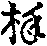也。五多結使者。謂嗔恚等煩惱也。六盲瞎者。及禿跛躄聾瘂等也。有三行罵法者。將此六相。分為三品罵故。初面罵者。因對面說。言喻罵者。比類而說也。言比罵者。我非是某人等。二善罵者。標也。亦有三者。謂同惡法分三也。汝是業若乃至坐禪者。律文初引阿蘭若乞食補納坐禪。今云乃至越中間也。但是善法罵皆吉。餘二罵皆喻比二也。例之可解。問。善法是好罵者是惡罵。如何結犯。戒疏云。以罵者心。欲相屠割。微見小失便張廣大。汝是疎居。如何猶著。無學尚搆瓶衣。故以微緣潛相扇作。情過非重。故結輕也(已上疏文)。
云僧祇至故者。准彼律。毀呰有七。一種姓。二業。三相貌。四病。五罪。六罵。七結使。前三人各有上中下三品。下四唯下品無中上。今云上惡法者。却將第三下品惡甚者。轉為上惡法也。下種姓者。云汝是旃陀羅種等。汝是湊拘尸婆羅墮姓也。下業者。屠獵師等。下相貌者。瞎眼虫頭等。持此下三法。毀餘比丘及父母者。父母得提。以親生色身。對比丘毀之。受辱同於己。故結提也。和上闍梨。能生法身。由如父母。但為種姓業相於己不同。降之一階。但約業罪同師道支種性更疎。故但吉也。餘有中下惡法等者。中為中容。即首陀等。是中種性。賣花紛生店肆等是中業。太白太黑太青等。是中相貌。若以此罵父母業。和上闍梨重吉。同友輕吉。下惡者。汝是剎利婆羅門種。是上種姓。汝是蹤金師業等上業。汝有三十二相等。是上相貌。以此罵父母重吉。和尚等次吉。同友最輕吉。謂中品無提。下品無蘭。故云遞減一等也。面比罵外等者。注文。自解易知。地有金藏好令人鬪者准祇文。惡姓戒明闡陀過去曾為長者奴。名曰阿摩由。打他婆羅門從人。諸婆羅門語令莫打。打故不上。乃吉摩由。摩由主得天眼。觀見鬪處。地下有金藏。令人屈之。果得其金。又彼律云。王殿前有金藏。人在上立。即云。我欲索王女。王恠遣別處立。即不敢言。後來舊處。仍前之語。遂屈。之。亦獲金也。諸記中。雖相承引此文。然並未知鈔意。大德云。前引十誦六諍本。全約內心。不關外境。今引祇律。縱內心能差。則諍不合生。良由外境牽之。使他令諍。謂地有金藏。薄福之者。在上不銷。致其兇惡。因茲諍也。思之。迦葉舉造房僧過等者。准律十三戒中。或有比丘。造大房。聚落乞求。人皆生猒。迦葉入村乞食。居士走避。追問因由。長者具答。迦葉以事白佛。佛令汝今夜出界外宿者。其夜復有非人。以事白佛。佛令汝今夜出界外宿者。其夜復有非人來白佛。比丘伐樹。傷於我子支體。我以信心。不被加割害。願佛知之。佛明旦集僧。呵造房比丘。直云。昨夜非人來白。不云迦葉。以護造房比丘之心。恐恨迦葉。舉他之過。因茲毀呰迦葉。若舉罪人。必不敢毀。聖人尚護人心。凡夫比丘而相毀等。餘類者。玄云。即如龍鳥乞珠翅翼之例。以下況且也。今云。不知引解有何意。請思之。
云不至世者。莫嗔諍相言者。十誦云。自恣時有比丘。說他比丘罪云見聞疑。諸比丘。知舉罪人。自身不淨。能作婬盜。乃至壞生飲酒等。不應信此之人言。即語云。長老莫鬪諍。莫相言。莫遮他自恣等。准鈔意者。眾僧雖知舉罪之人。身業不淨。亦不得出言語彼云。汝破戒不淨。因何舉他過。若發此言。便成毀呰。但云莫鬪諍相言。即不傷道理也。
云兩舌戒三者。戒疏云。二邊傳言破云兩舌。此是所防(若准唐三藏。翻為離間語戒。今云兩舌。頗為質陋也)。
云律至一切吉羅者。彼此鬪亂令他破者。傳此語令分離也。某甲說汝是者。謂是旃陀羅除糞種獄子皮師賣粉人等也。無有上中下法者。祇中七種罵法。上三則有上中下。只至於犯罪。亦有昇降。今斯兩舌。傳他之罵。不論上中下法。但作分離向己之心。不問前人離不離。俱一品提。更無蘭吉之降也(有人破鈔句知之)。更說墮者。傳他語來重重向前人說重重犯提。
云律不犯已下。如文。
云共女至四者。釋名牒鈔。
云五緣至墮者。如文。
云律中至犯者。人女有知者。即簡非人及畜女。無犯者。有知則簡小女。未有所解。命根不斷。即簡死女也。注文中。准論不合者。即多見二論。下文自顯。前敞無壁者。准似今明廳屋下亦犯。三雖覆而不遍者。謂周迊障兩頭覆。中央不覆也。四雖覆遍而有開處者。上開天井取明是也。前室多開。此室但有明孔為異也。若亞臥者。邪倚也。但不正身臥。或倚東西壁繩床等。皆名亞臥。故戒疏云。或側有所憑倚。即名為宿。更有不正解。不敘。
十誦乃至羅漢等者。彼云。佛告般律。汝雖羅漢。不應與女同宿。如熟飲食人之所貪。女人欲男。亦復如是。此律羅漢。亦那律也。比丘被適非空。女方悔過。無學尚被陵染。何況凡夫。不得強云不畏拒抗。佛之所制也。
云多至吉羅者。前來鈔文注云。准論不合。正是此文也。注云并部等者。即大原諸洲多作斯屋。上不起棟平作。盡以土覆。中間開請泄水。極長十間五間。中不隔塞。共同一戶。餘如文。
云十誦至不犯者。有明者。雖有多人。不可闇坐。若有灯明復不睡不犯。若臥不睡亦犯。注文。不但簏床者。諸記中並不消釋。大德曰。此謂防人污情故來。恐有以簏幕等。圍遶於床。謂言不犯。故注簡之。諸部男子自伴者。即下引五分。有知男子自伴不睡也。云不犯已下。有覆無障。都有九句。室相不成。事同露地。故開不犯。可尋文即見意也。
云共至五者。釋名牒鈔。云五至犯者。餘義如別者。古人列緣中。但云未受具人男。簡去女子。所以爾者。古云。佛制不得與女同宿。一夜尚乃不開。登得有過三夜之失。故伽論云。與女續至三夜。但有同宿罪。無過三夜罪。此文非鈔所宗。不更具錄。故指如別也。今師云。然以通男女。故戒疏云。昔云男犯非女犯。以制隨宿。義無三夜開。今解二俱犯。故伽論云。曾前與男二夜宿。第三夜宿。隨臥轉側。二波逸提。准此今師約相續犯故。是以列緣中。云男女也。古今各引論文取釋意別。更有餘義非急。如大記中述之。二三四緣同前戒者。二室相成。三同宿。四知同宿也。五過三夜犯者。第三夜明相未出前。是過二夜。明相纔出三夜。是過犯即也。
云律至吉羅者。注文。准此不云吉羅者。此是提家方便吉也。若明相未出不避。得方便吉。即知。明相出時得過二至三果提之罪。若明未出前避去無吉。明出犯提。縱繞第三明未出避去。至第四宿。必定不開。故令自去。或使彼去。見論又云。明相未出不避者亦不犯。謂不犯非無也。注文。初夜即坐不成開者。搜玄云。謂第四夜初夜即坐者亦不得。故云不成開。謂第三夜已開其坐不犯。開不重開。故不成。要須遣去自去等。下引五分長坐不犯。明知。前二夜臥。至第四夜不成開(已是記文)。准此語。第四夜不臥。為初夜也。大德不許此解。既從第四初夜便坐。到明脇不著席。未審。何時是結犯時節。故不正也。今依法寶云。從第一夜。至第四夜便坐。至明即不犯。故云初夜即坐不成開。大德又曰。准此不成開。謂不成與未受具人。同宿開犯之理。以不臥故也。下引五分。長坐及互坐臥本分不犯。證成上義也。又注文皆四夜通夜不臥者。此顯一夜通夜不臥。亦不名一宿也。轉長罪者。若未懺。雖經多日。更共宿。脇脇著提。隨轉側提。重重得罪。故云轉長罪也。無二夜開者。釋上義也。謂此比丘與沙彌宿。犯未懺悔。雖隔多日。由罪未除。無無罪隔。合夜脇著。罪則重重。何有更開二夜。共未受具人宿耶。別房宿。更得二夜者。謂悔其過。不得當日同宿。當別房一宿了。乃可更得二夜。
多論四句等者。謂此戒但約未受具者為言。不簡人之與宿同異。四句雖殊。過三並犯。
云與未受具人至六夜者。釋名牒鈔。
云五緣至犯者。二字句味者。出教體也。字謂名字。句謂章句。味即是文。新云名句文。舊云字句味。梵云那(上聲)摩庚。此云名。名者想也。想有二義。一取像名想。即心所中大地法。二契約名想。謂諸賢聖共相契約立色等名。如云深廣無涯名海等。今以契約之想用釋於名。舊呼為字。句者章句。梵云縛迦。此云章。梵語鉢陀。義飜為句。俗書中。章多。句少。內教中。章即是句。但約詮義究竟邊名句。如言諸行是名。無常是句也。文者。梵云便膳那。言文是能顯義。近顯名句。遠顯於義。且近顯名句者。唯識論云。名詮自性。句詮差別。文即是字。為二所依。謂名句二法。依於文字。文字是依聲建立。故對法論引織錦喻。先依文交錯織成龍鳳。後合為錦窠。然依絲文而起(法合可委)。遠顯於義者。如西天風俗。呼扇鹽醋。皆云便膳那。亦是能顯義。扇能顯風。鹽醋能顯食中味。是以古來譯為味者。飜之謬也。謂若於此名句等同誦。表教體不圓。鈔奪前言。故犯也。
云律中至多少者。口受者。謂無經本口中授與。同聲而誦。故犯也。書授者。一釋云。執本授也。玄不許此解。雖執本。亦須口言。還成口受。今准下不犯中一人誦竟。一人書不犯。今誦未竟便書。恐句義不圓。故是犯也。大德破云。前云口受。但據暗中不執經本。今云口授。據有經文所執。道理自明。何勞疑惑。今決取初解為勝也。注云。決回分不了文者。謂四句但云聲聞天仙等說。不言為佛印可成經者。同誦有罪。今引祇文決也。不簡文句多少者。亦是不了。上引十誦。隨其章段。故得墮。方為決了。
云多論至儀者。二人俱經利者。相並而誦。名句文全。教體不闕。則非犯相。消息不失威儀者。謂但自消息莫失僧儀。即得也。
云向至七者。釋名牒鈔文(云云)。
云多論至墮者。謂破塔壞像。但能自損。不能損他。他猶於塔敬而獲論。說他麤罪。自壞壞他。令一切人。於此枝說。比丘傳持正法。即不信受。以不信受法故。豈不同壞法身。
云七至知者。四無僧法者。如調達破僧。佛令眾僧白二。差舍利弗。往告白衣調達非法等。
云五至有者。若已作法人問者。謂已作羯磨法差人說也。問。作法正法應說。何故倒問。答。夫得說者。須是被差之人。有法在身即得。今非被差。不合擅說。故須倒問。故云亦某處聞也。因俗女等者。謂女是犯殘比丘知識。因問其故。難陀語云。汝阿闍梨小兒時戲。猶故未除。女云。我阿闍梨尚爾。遂入房掩戶而說此偈(等鈔)。
云律云至墮者。上二篇者。謂麤故犯提。下篇故不能破壞故吉。自說己罪輕者。以希少也。說名字者。謂於眾中說某比丘犯某罪。種姓者。李比丘等。衣服者。著乾陀色衣比丘犯也。房舍者。從東第一房等。相貌者。眼白面黑比丘犯也。
云不犯中不知者。玄約不學數人說。今恐是了教之徒。據說時心迷。不知有犯也。麤作非麤罪想者。亦據心迷。雖說前人所犯之事。我心且不麤惡之想。故不犯也。
云實至八者。釋名如常(云云)。鈔闕列緣。今依戒疏。具五緣。一內實得道除增上慢。二自言己證。三向未具人說。四言了。五聞解。鈔為希故。略明不也。
云問至也者。制聖遮凡。聖實得道。向俗人說犯提。即是制聖。聖人奉制。然雖無犯。今由有戒者。為遮於凡。若後見說。便知非聖。以聖人奉戒。終無犯故為護。大妄語者。凡夫若言得聖。即犯大妄。今制聖遮凡。聖既不說。說即是凡。故令凡人亦不犯。故可不是。今時所要。不可不述。
云與至九者。釋名牒(云云)。戒本緣起中云。姑前與兒婦耳。語說法者。大德引爾雅。釋親中云。夫之母曰姑。在則言君姑。沒則曰先姑。夫之父曰舅。在則言君舅也。有人錯解。今破明之。
云六緣至犯者。如文。
云若至墮者。五六語得者。解彼云。有婦女應風發。比丘不為說法。日日風發。因此白佛。佛問比丘。幾語得解。比丘言。五六語得解。佛深歎之。因即制也。又僧祇。毗舍佉母病。聞阿難說五六語。便得差也。使汝速盡苦者。既說五陰六入竟。更語言。汝斷諸漏。盡諸苦得提。以過限也。
云律至羅者。出家不得以事同者。謂出家人過五六犯。其事同犯。不得為證。要須得俗人。兼解好惡。言義之者。餘如大疏中者。首疏云。如祇說五六語竟。送出門禮別。若言安樂住無犯。若言使汝速盡苦原。證菩提果。若無淨人門面路路引不斷。或在門上。人遙見聞等不犯。反上即犯。中含云等者。搜玄云。凡有人請問者。兼約男女也。思律中者。若是女請當思律中過五六語不犯。若不請問。自為說過五六語即犯。不了吉羅者。五六語未了。便止得吉。是方便罪了即犯提(已上正釋)。更有解云。鈔文從中含云。乃至當思。此是經文。律中已下。是四分律文也(此是妄釋注自分明)。
云不犯等者。除男除請。皆是開緣。戒本略明。一開不云除請。但云除有知男子授五戒者。三歸體也。五戒法者。謂說相也。八關齋者。八戒也。閇掩根門也。及說齋法者。亦說相也。八聖道者。語業命見思勤念定也。十不善者。謂身三口四意三也。或女人於適來所說未會。若問更與廣說一切不犯。
云掘地戒十者。釋名牒鈔(云云)。
云五緣至墮者。如文。
云戒緣至哉者。緣即如前。僥倖者。謂掘地招罪妄營為福。故傷之也。
云律中至吉羅者。若已掘地者。簡未掘地也。即天然之地故。今就已掘地中。復有二種。若經四月隨觸便犯。此不論雨也。二被雨漬者。謂乍掘遇雨。即與本同。故祇云。井池瀆水瓶器著地死土。被雨漬使淨人知自取犯墮。還如本者。謂四月約時被雨約緣地有生相故。云如本若用等者。钁(俱縛反)錄(盧對反)手耕具也。掐(口冷反)扴(吉點反)若不教言看是等者。失法得吉。若被隨語而掘得提。除為僧塔作摸者。僧伽藍模樣塔亦爾。向泥上作摸開無吉也。
蜀本多論者。准大周經。目中先有八卷。失譯釋九十盡至六十八戒。後即闕也。首師疑文不盡。常廣求訪。後值蜀僧字寶雲到京。首疏主借問云。不委蜀中多論有幾卷。彼云。有九卷。其第九卷。從壞生戒釋。直至末文。首律師。懇求令歸御後抄取附來。後經一秊。方附到。因茲號為蜀國多論首律師。自制序具敘因由(云云)。論中約天然生地辨生非生。四月八月者。謂此兩月是雨時。縱使不雨地下潤勢相掩。令地面潤。並名生地。除此二時是無雨時日炙。地面乾燥。風吹土起。名為非生。餘文可委。云僧祇至取者。轉石等者。謂有心令地乎。故犯土塊。一人不勝者。謂一人擔不起。即下任運與地潤相連。生分多故。破者犯提。若撤者(直列反發也)。摘(涉草反手取也)兩三行(戶郎反)者。謂就地壘土塹為壁故。雨三行塹也。抒者(徐呂反說文云泄水也)。以雨能生地者。祇云。若新雨後比丘不得。自抒井應使淨人。若淨人小。先令撓。後自抑之。
云四分至不了者。當宗為護住處俱得也。餘如諸部者。即三千威儀云。若火來。水風王賊等。召沙彌等。有打鐘方法。前約有人。若蘭若無人。如五分注。云四分文中不了者。以文中列屈內土。即自解云。此死浮土也。若使除屈內土。即得掘內地。僧祇。露處死土屈中。自掘中藏物者。得即是決四分文也。
云壞生至十一者。釋名牒鈔文(云云)。
云具緣如上者。一生草木。二生草相。三自壞使人。四不知淨語。五傷便犯。
云四分至鏡者。非人是者。謂但異於人類。總是非人。一切草木是者。謂斫神樹即為戒本。所門詺草木為村。十誦云。蚊蟻諸虫以之為舍。四分神依止故如世聚落。故云村也。注文。恐無知濫行者。破古也。初有古師云。鬼神村者。即今神廟是也。次有古師云。以戒緣斫神樹非廟屈。但約極大樹。是非人所依。即名村也。若小小草木。及諸種子之類。壞即不犯。今簡斯濫故。引諸部通解不謬也。初引十誦。既云諸虫為舍。則何簡大小。次僧祇壞種子。破鬼村。亦何假大樹及與廣窟。注文相同。明鏡者。引上二律。和會釋通。相狀如鏡。鑒照分曉不須妄執也。
云律至吉羅者。首疏云。雖有五義。今合為三。一根生。二枝生。三種子生。就根種中。分二根中。不假節生者。作根種之名。即芋薑蘿蔔是。若根中假節生者。作覆羅之稱。蘆蓽芹蓼等。亦名雜種。謂假根假節生也。就枝種亦分二。初枝中不假節生。作枝種之名。如柳榴之類。若枝中假節生者。作節種之目。如耳茲藕。皆屬覆羅攝。子子種中。當體立一子。還生子故。始末差別。離成有五。釜中炒以釘釘樹等。並犯。
云僧祇至吉羅者。謂前辨五種。已知。然則淨法未委。故次明也。前五生種。名有淨法。芽因者。在土芽。出土曰目。心種者。要也。如根種中。要根要節。合始成種故。謂此種為心種也。蘿勒者。蘭香也。以後趙主勒。故以避之。十七種穀者。祇云。一稻。二赤稻。三小麥。四穔麥。五小豆。六胡豆。七大豆。八豌豆。九粟。十黍。十一麻子。十二薑勺。十三闍豆。十四波羅陀。十五莠子。十六指耶。十七俱陀婆。是名十七種。火淨通五種者。謂五種。若火淨通得食核。五菓中者。標也。下文自辨。相菓核種者。注文約生熱二棗熱者。謂在樹上熱。今時日成乾棗。亦須火淨。二膚菓。三殻菓。四糩菓。五角菓。如文糩者(苦會反也)。准此蒿草者。鈔意義。准前糩菓。既云有子火淨。今蒿草有子。亦須令相看火淨也。寺主穀倉乃至餘事類知者。引此火淨穀事為證。前蒿草等含子。但令相著火淨並得也。雨後舉木越等者。玄云。前戒引祇。舉木博瓦等經雨。若自取墮據壞地性邊結。令據壞生氣分故。越注文者。鈔意謂。四分開舉石木。今祇舉木犯越二文。所以相違者。即引注文通之。朝菌者(渠殖反)。注爾雅云。木耳也。或云桑[荋/大](而兗反)。生相不久但得吉也。
云善見至取者。如文。
云五分至相者。此律一業壞多種。隨多少結者。謂如比丘將一把豆一時煑隨粒多少。一一結提。十誦文中。通結一罪。若壞五生種。方得五罪也。乃至前戒等者。因便以論。謂前掘地。不作淨語隨掘多少。一一結提。若僧祇文。取掘住持。方結一罪。故知。壞生掘地。當部甚急。他部並寬。宜須誡世也。柳榴之類。就地離地壞。皆墮者。就地即在樹上也。離地即非在樹也。既已離地。不合犯提。但為此樹神亦得活。有生長義。故犯墮也。離地槐櫰榆栢者。准爾雅中。有三種葉。小而青曰槐葉。大而黑曰櫰。夜合盡開曰宮櫰。此等樹者。若已離地。其色又萎。壞之不犯。謂無生長義也。若與地連。即是未離。有生相故墮。若雖離地。色未改者。但有壞相吉也。
云不犯已下。如文。
云身口綺戒十二者。釋名如常(云云)。
云四至便犯者。口綺者。異語也。身綺者。觸慳也。謂不應理。名之為綺。
云四至吉羅者。汝向離說為論。何事者。緣起因闡陀犯罪。諸比丘問汝自知犯不。彼云。將事報言。汝向誰說等。餘如口綺法者。亦是未白前依得吉白竟提也。
云不犯至未文者。文有三意。初開口綺。二若欲作下開身綺。三惡心下雜約心事辨非。並如文。具委也。
云嫌罵至十三者。釋名牒鈔(云云)。
云五分至吉羅者。餘人者。一二三人差曰餘人也。正拜人者。是羯磨所差也。此蓋飜譯人取意。故言拜。如今時筞某人為宰相。便云拜相也。倩者。是正拜人自倩倩人更倩展轉三人罵。俱犯提也。因說大莫等者。祇云。佛在跋祇園。人間遊行。與諸比丘眾。至一故河邊。見捕魚人提大網。沈石浮瓠。順水而上。岸邊各二百五十人。叫喚牽網向岸。爾時眾魚。皆墮網中。有大魚有百頭。百頭各異象馬牛羊之類。佛見已喚之便應。又問。汝母今在何處。答在闍(音清)關中為虫。諸比丘問佛。佛言。此大魚是迦葉佛時。三藏比丘。好惡口故。受難類頭報。其母受他供給。不消利養。皆是施物作廁中虫。佛說是因緣。時二百五十人。皆止網業。出家學道。成阿羅漢。故知口業須大填之。
云露敷至十四者。釋名可知。
云六緣至犯者。如文。
云五分至吉羅者。曝(蒲木反)僧臥具不得。禪眠恐雨來不覺得吉也。手觸不舉墮者。既曾經手觸。即共自敷不別。春月者。即四月有雨月也。去時聚已當去者。舉小況大也。通表有慚之人不屬諸房遊行者。亦恐暴雨不覺。故與吉也。
云四分至吉羅者。若即時還者。問。列緣中出門即犯。今此聽往者何。答。前出門結據未返為言。今據暫行開茲方便也。方便悔者。律云。一足在內一足在外欲去又應去。還悔者。一切吉。二俱墮者。律云。若二人共繩床並坐下座應收下座。便作此意。准擬上座收。上座不收。下座得提。復有非威儀吉上座意中。謂言下座收。而不收。上座提。若二人不前不後俱不收。二俱提。空床九衣表裏損壞易脩。故但吉。入房思惟文才。恐雨不覺。亦與吉也。云不犯已下如文。
云覆至十五者。釋名牒鈔(云云)。
云五緣至犯者。或出界。或過三宿犯者。或者不定也。若作永去心出門便犯。若作暫去意過三宿。如犯付囑等。緣一同前戒。
云律中至墮者。如文。
云強敷戒十六者。釋名牒鈔。
云律中至不犯者。如文。
云牽他至十七者。釋名牒鈔(云云)。
云四至犯者。一春分者。西國三時分房。若春冬分房。己雖受得分。後見上座來應避與上座。故知不屬己。若牽他出即犯墮。夏房不爾一分竟。後上座來不應避屬己。己定牽去出犯吉也。
云律中至吉羅者。若呵叱(赤質反稍重呼)惠鼾眠者。作意惱他吉。今約無心。但為好鼾睡恐惱他。故令起經行或屏處等鼾字(胡旦反臥息聲)。不憙人來者。或衣垢。或無威儀等。
云律不犯至也者。隨次出者。謂僧房內人多人知一夜出宿。前是俗處者。前戒約俗家。非僧住處。不簡染淨。此戒是僧房惡人。無分駈出不犯。
云坐脫脚十八者。釋名牒鈔(云云)。
云三至犯者。若依戒疏。四緣二是薄覆鈔闕此也。三在上坐臥犯者。謂若未制戒前。即約床脚脫方制。今據制了。但使是脫脚繩床坐便犯也。
云用至十九者。釋名牒鈔(云云)。
云律云至漉者。一一提者。戒疏云。此不就損命中制。但深防與制。若彼命斷自依畜生正得一墮也。十分之一者。大德引俗書云。陸地虫極細不過[冰-水+焦]蟟虫。向蚊子眼睫中為窠。水中極細莫越[酉*(蓋-去+太)]雞虫。若非天眼。莫之能見也。百千萬由延者。亦引偽書辨陸地大魚過騏麟水中大不越鯨魚。俗說曰騏麟鬪與月蝕。鯨魚死與彗星現。又經中目連。令弟子觀往業。曾作大魚骨似七金山高等。日日諦觀者。諸記中。皆引遠大師流水偈云。
諦觀清水猶疑有虫。是須淨漉揚茲道。風自行桂錫化物隨願為用雖少在益難窮。如人闕此忍渴而終。肉眼所見者。多論云。時舍利弗。以淨天眼。觀空有虫。如水邊砂。如器中塵。無邊無量見。已斷食三日。佛勅令食。凡制有虫水者。齊肉眼所見漉囊所得不制。天眼見凡用水法應取上好。細[(畾/(冗-几+互))*毛]縱廣一肘作漉囊。令一比丘持戒多聞。深信罪福。安詳審悉。肉眼清淨者。令其知水如法流水置一器中。足一日用明日更看。若有虫者。應更好漉。以淨器盛水向日諦觀。若故有虫應二重作。若故有虫不應住此。若無漉囊不得半由旬若更無者。用衣角漉以顯所為大故(大德曰上言三重漉者約三度漉有云三重絹作漉囊即得厚緻者非也)。
云律至不犯者。無虫想者。據迷一切無犯。若轉想結前心吉猶有犯故。
云覆屋至二十者。釋名牒鈔(云云)。
云曰至犯者。多論云。此是三十中大房。用三萬錢作成。即崩施主生慳。比丘為說房之功德。此房未倒之之時。佛曾到此。便是無上福田等。復有一新受戒比丘。於此房經一宿。持戒暫時。受用功德。如須彌山。房今雖崩。功德已成就了。第三節未竟。不去見聞處者。所言三節即三重覆。但約一重為節。故多論中作房三品上中下也。此三品房。各有覆之齊限。若中房用上法覆。以重故勝戴不起。隨用草等。一一皆提下房。例爾。今云三節未竟。不去見聞處是犯。若互離得吉。俱離無過准律文也。
四至節竟犯者。謂二節未犯。至第三竟時結墮。如與未受具同宿不別。至第三宿。明相纔現即犯。有人云。過三節至四方犯。以戒本云。過者波逸提。今既未過。正齊三節。未合結犯。此未達文意。幸請思之云輙教尼至二十一者。釋名牒鈔。以對此待消戒本竟。略料簡結下。四眾罪相狀。此稍難知。不類諸戒。所以爾者。若僧不差。輙住教誡結提。即不疑。且如下眾。何得有輙教誡之理。便結他吉。今故明之。尼據僧不差。輙往僧寺求教誡尼下二眾不白。大尼輙往僧寺禮拜。求請說法等。僧沙彌理合禮大尼。今不白僧輙往尼寺禮拜問許等。已上並結吉。故云下四眾吉羅也。表又云。引戒理合在教誡。日暮戒後。諸記中。並不見評論。親曾撿多論文來。方[口*厲]。是譯律之家訛濫失於次第。櫢彼論云。初時比丘尼盡往僧寺中求教誡。後為人識。乃輪差五人來僧寺中。亦不免譏嫌。遂差盤特比丘往教授。但為盤特根鈍。諸尼總知。至於迎逆。並不殷重。引比丘雖根鈍。已於如來言下。證果竟。觀是諸女。有輕心。遂現神通。諸尼並皆悔過(此第一緣)。其次差至六辟。六辟至彼。遂說世俗法。并戲調之言。不合根機(是第二緣)。時愛道尼白佛。佛令白差一比丘。須具十德者。遂差難陀。說法教授竟。嘿然與住。尼又重請說。至日暮尼[山*聶]祇洹而歸。城門已閉。諸尼總在城濠中宿。明日守門人見遂述上緣。因為譏責(是第三緣)。後六辟見白二差難陀。既不差他乃輙往彼教誡。以此量之。故知。引戒定合在後。學者要知。莫塧繁廣之。恐思之。
云四緣至便犯者。如文云。律至磨者。僧不差說法八敬俱墮者。律云。若僧不差。或非教授日。而往與說八。不可越法吉羅。若僧不差。而往與說法者提(已上律文)。
古師云。若僧不差說八敬吉。若不差說法得提。所以然者。八敬生定慧義狹。故輕吉也。說法寬故。邪正難辨。恐壞尼心行。故結重提。若日非說。二同犯吉。故戒疏云。昔人解云。日非八敬。同犯吉羅。不差說法。俱犯提罪。即二提二吉。今解不然。說法八敬無別輕重。故戒本云。教授者提。廣說法者提。故知義一。文云俱墮據不差。以言所結罪。約曰非說也。曰非吉羅者。四分無文。引僧祇釋。前三吉者。注文自辨是經說戒。十五日後即十六十七十八是也。後二者。注亦自辨。二十九三十日。引約黑月說。大德云。謂西天黑月有初順鈔文。須先明黑月。前三即初一二三。後二即十四十五。除却前三後二。無間黑白中間。十日恒往。餘日為非也。又祇中。前三白月中。初一二三黑月。十六七八此名時未至。後二白月十四五黑月二十九三十日。祇中。名為過時。彼廣列八法。繁而不述。如刪補羯磨者。彼云具十德者。頌云持聞頌決說姓貝。堪家滿持。謂堅持戒只聞。謂多聞誦。謂二部。戒律。決謂決斷。無疑。說謂能善說法。姓謂高門大姓。貌謂端嚴殊異。堪謂任說法。家謂出家。不犯重戒者。謂滿二十夏已上。然於十四堪之與善不無相濫。疏云。雖能善說。未必稱機故也。
云與尼至二十二者。釋名牒。舉鈔文銷戒本。後結下四眾吉類。前可解思之。
云律中至吉羅者。除教授者。謂除此犯提外受經已下但吉除尼者。俗女但吉也。
云譏教至二十三者。釋名牒鈔(云云)。銷戒本竟結下。四眾罪者。大德云。尼譏大僧吉尼二眾譏。當眾吉沙彌譏大僧吉。
云六緣至聞知吉易解。
云不犯等者。其事實爾者。實是為食。故不犯。若問者。以心疑故。乃問脫人汝莫是為。餘食不無嫉不雖如此問不犯也。
云與非至二十四者。釋名牒鈔文。
云與至二十五者。釋名可知。
云不犯已下可知。
云獨至二十六者。釋名牒舉鈔。
云四緣至犯者。一是比丘尼者。據光律明犯緣也。若據五分多論。尼三眾同犯。譏染不殊。俗女不犯。二[斬/耳]第三人者。引戒第三人。須是白衣。三屏露二處者。若本緣起中。在露地坐。戒本釋相。俱明屏露。古戒本云。屏露處坐者。波逸提。
云十誦至吉羅者。我欲起者。比丘共尼坐恐犯。獨坐前尼益食去時應吉坐。尼言佛不聽。我與尼同坐。我今欲起者。先作如是方便。若不先告。直爾便起坐。尼心疑將。謂比丘起作非法。故云莫令彼疑作非法也。更有別解不正。
云不犯至者。如文。
云與尼至二十七者。釋名牒鈔(云云)。
云五緣至犯者。無緣者。無命難恐畏之緣。五度界者。從一村至一村隨結提。故祇云。若經一聚落一提若無聚落。即一[牛*句]慮舍犯也。
云律不犯至逕者。大伴行者。戒疏中。約多比丘一尼亦犯。要待多伴。方開據理合是多尼。為大伴。或有約俗伴。男女共行。名大伴亦得。疑恐怖者。行途多難。故開疑怖。
云與女同船至二十八者。釋名可知。
云四至犯者。三同乘上下者。今師戒疏。將此分。為兩緣。一同乘一船不犯。二依順流上下意。除直渡也。入船犯者。律云。雙足捉一足在岸吉。
云食尼至二十九者。釋名可知。
云四至墮者。如文。
云律中至不犯者。律明歎境。先舉十二頭陀。從乞食至持三衣。中間越却十頭陀。故云乃至。食者。從是至中。戒疏云。故知大小二食皆犯。餘襯衣等者。所以衣輕者。財重難捨。又希施故。除舊檀越者。即顯非因難德與食可常乞(去呼)食者。言輕故不犯。
云與尼至三十者。釋名牒鈔(云云)。
云具至吉羅者。同前與尼期行。五緣犯幾者(音其近也)。村內一界者。未越分齊故吉。若越即提。乃至越多村界多提。空逈處十里一提。
云不犯至者。者可知。
四分律鈔簡正記卷第十一